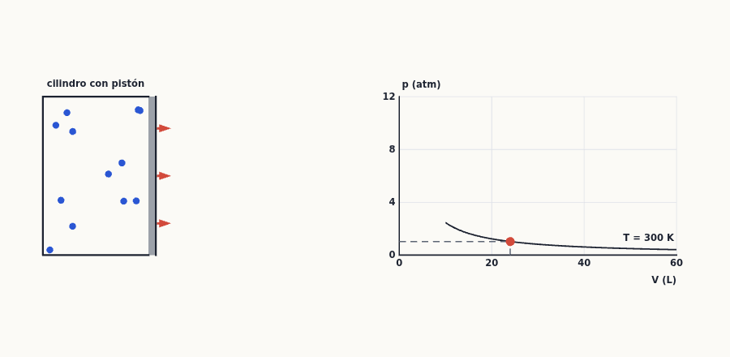
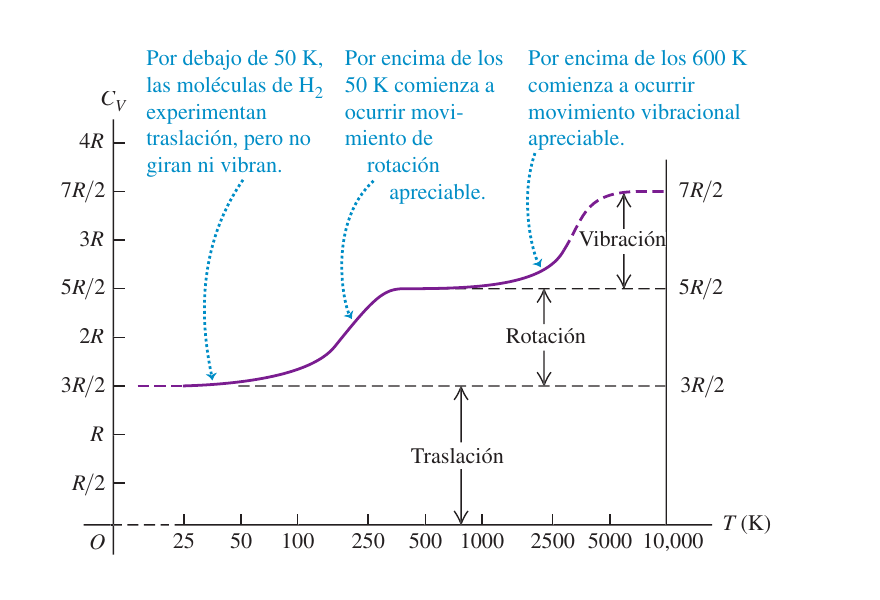
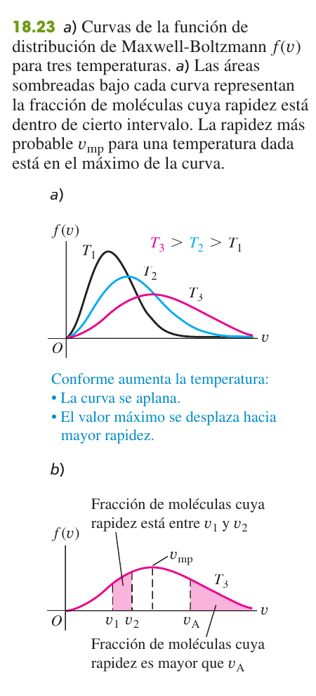
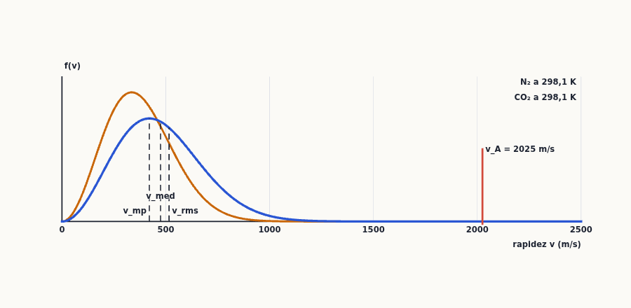
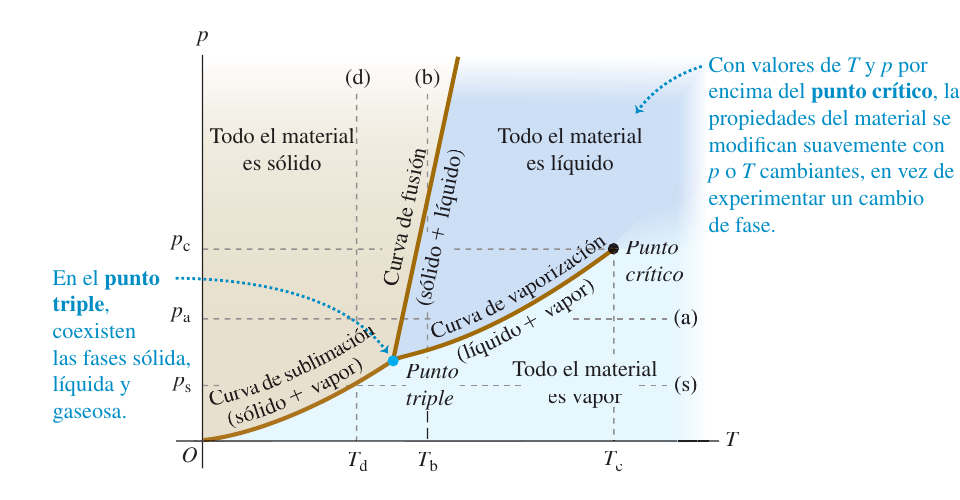

Propiedades térmicas de la materia
Cómo se relacionan la presión, el volumen y la temperatura de un gas (la ecuación del gas ideal y la de van der Waals), qué hay detrás a nivel de moléculas (el modelo cinético: la presión son choques y la temperatura es energía cinética media), por qué cada gas necesita una cantidad distinta de calor (capacidades caloríficas), cómo se reparten las rapideces de las moléculas (Maxwell-Boltzmann) y cuándo la materia es sólida, líquida o gas (diagrama de fases). Es la base de los problemas de ciclos termodinámicos de los temas 19 y 20.
0Antes de empezar U p.584
Prerrequisitos: (1) temperatura y calor (tema 17): escalas Celsius y Kelvin, $T_K=T_C+273{,}15$, y el punto triple del agua; (2) presión y fluidos (tema 12): $p=F/A$, la presión hidrostática $p=p_0+\rho gh$ y el empuje de Arquímedes aparecen en varios problemas; (3) energía cinética y conservación de la energía (temas 6-7) y cantidad de movimiento (tema 8): la teoría cinética es una aplicación de $K=\tfrac12mv^2$ y de $\Delta p=F\Delta t$ a un número enorme de moléculas; (4) potencias, logaritmos y exponenciales y un poco de integrales (para la distribución de rapideces).
Mapa del tema (sigue el orden de U): 18.1 ecuaciones de estado (gas ideal $pV=nRT$, van der Waals); 18.2 propiedades moleculares de la materia (mol, número de Avogadro, fuerzas entre moléculas); 18.3 modelo cinético-molecular del gas ideal (presión por choques, $K_{tr}=\tfrac32nRT$, $v_{rms}$, trayectoria libre media); 18.4 capacidades caloríficas ($C_V=\tfrac32R$ y $\tfrac52R$); 18.5 rapideces moleculares (distribución de Maxwell-Boltzmann); 18.6 fases de la materia (diagrama de fases, punto triple y crítico). Después van las cuestiones de teoría, los ejercicios resueltos, la chuleta y la lista de comprobación.
En las convocatorias catalogadas no hay ningún ejercicio de examen cuyo tema principal sea el Tema 18 (ni problema ni pregunta de teoría): no se simula ninguno. Sin embargo, la ecuación del gas ideal es la herramienta de arranque de todos los problemas de ciclos termodinámicos (temas 19 y 20), y tres problemas reales de esos temas empiezan por un trabajo puro de este tema: hallar la presión, el volumen y la temperatura de cada estado con $pV=nRT$ y usar $C_V=\tfrac32R$ o $\tfrac52R$. Aquí se resuelven solo como práctica relacionada (primeros pasos de gas ideal; el calor, el trabajo y el rendimiento llegan con los temas 19 y 20) y se identifican con su convocatoria.
| Convocatoria y pregunta | De qué va (resumen) | Dónde en este resumen |
|---|---|---|
| Examen Septiembre 2024 P-2 | Ciclo con 1,5 mol de helio: isócora, isoterma e isóbara; $T_{max}=573{,}2$ K | §8.1, ejercicio X1 |
| Examen Febrero 2025 (1ª semana) P-2 | Refrigerador con 1 mol de gas diatómico: isoterma, isócora, isóbara | §8.1, ejercicio X2 |
| Examen Febrero 2025 (2ª semana) P-2 | Ciclo de gas monoatómico: isóbara, isócora y una recta | §8.1, ejercicio X3 |
- Un solo estado del gas (te dan $p$, $V$, $T$ y piden $n$, $m$ o la cuarta variable): usa $pV=nRT$ (con $n=m/M$ si te dan la masa). Dos estados de la misma cantidad de gas: usa $p_1V_1/T_1=p_2V_2/T_2$ (no hace falta $R$).
- Siempre presión absoluta y temperatura en kelvin, también dentro de cocientes ($T_K=T_C+273{,}15$; $p_{abs}=p_{man}+p_{atm}$).
- Si cambia la cantidad de gas (se escapa, se bombea), no vale (18.6): calcula $n$ o $m$ en cada estado con $pV=nRT$ y resta.
- Si preguntan por moléculas (energía, rapidez, número, distancia): pasa a «por molécula» ($m$, $N$, $k$) o a «por mol» ($M$, $n$, $R$) y no mezcles las dos formas: $k=R/N_A$, $M=N_Am$.
- Energía por molécula: $\tfrac12m(v^2)_{med}=\tfrac32kT$; rapidez eficaz $v_{rms}=\sqrt{3kT/m}=\sqrt{3RT/M}$ (con $M$ en kg/mol).
- Calor a volumen constante: $Q=nC_V\Delta T$ con $C_V=\tfrac32R$ (monoatómico) o $\tfrac52R$ (diatómico).
- Unidades: $R=8{,}314$ J/(mol·K) con SI (Pa, m³, kg/mol); $R=0{,}08206$ L·atm/(mol·K) si trabajas en litros y atmósferas.
1Ecuaciones de estado U p.585-590
Imagina que quieres «describir» un gas encerrado en un cilindro. Con cuatro datos basta: cuánto hay (el número de moles $n$), cuánto espacio ocupa (volumen $V$), cuánto empuja las paredes (presión $p$) y qué tan caliente está (temperatura $T$). Estas magnitudes se llaman variables de estado. Lo importante es que no son independientes: si fijas tres, la cuarta queda determinada, y no puedes cambiar una (por ejemplo, comprimir el gas) sin que cambie otra (se calienta o sube la presión). Esa relación se llama ecuación de estado: es como la «ficha técnica» del material.
U p.585Una ecuación de estado relaciona la presión $p$, el volumen $V$, la temperatura absoluta $T$ y la cantidad de sustancia $n$ de un material. Solo vale para estados de equilibrio (con $p$ y $T$ uniformes en todo el sistema). Cada sustancia tiene la suya, y la más sencilla es la del gas ideal. Para un sólido o líquido basta una aproximación (la expansión térmica del tema 17 más la compresibilidad): $$V=V_0\,[\,1+\beta\,(T-T_0)-\kappa\,(p-p_0)\,]\qquad(18.1)$$ donde $\beta$ es el coeficiente de expansión de volumen y $\kappa$ la compresibilidad (se reduce el volumen al aumentar la presión).
U p.585La masa molar $M$ de una sustancia es la masa de un mol (se mide en kg/mol; las tablas suelen darla en g/mol: agua 18,0 g/mol, nitrógeno 28,0, oxígeno 32,0, helio 4,00). La masa total de $n$ moles es $$m_{total}=nM\qquad(18.2)$$
U p.585$$pV=nRT\qquad(18.3)$$ con $p$ la presión absoluta, $T$ la temperatura absoluta (kelvin) y $R$ la constante de los gases (la misma para todos los gases): $$R=8{,}314\ \text{J/(mol·K)}=0{,}08206\ \text{L·atm/(mol·K)}$$ El gas ideal es aquel para el cual (18.3) se cumple con precisión para todas las presiones y temperaturas. Los gases reales se le parecen mucho cuando están diluidos (baja presión y temperatura lejos de la de condensación).
U p.586Cuatro lecturas cotidianas: (a) $T$ fija: si reduces el volumen a la mitad, la presión se duplica (la jeringa tapada). (b) $p$ fija: al calentar, el volumen crece en proporción (el globo al sol). (c) $V$ fija: al calentar, la presión sube en proporción (la olla cerrada, la rueda tras un viaje largo). (d) $p$, $V$, $T$ fijos: el número de moléculas es el mismo para cualquier gas (un mol ocupa unos 22,4 L en condiciones estándar). Las tres primeras son las «leyes» históricas de Boyle, Charles y Gay-Lussac; todas salen de (18.3).
PCon $n=m_{total}/M$: $$pV=\frac{m_{total}}{M}RT\qquad(18.4)\qquad\qquad \rho=\frac{m_{total}}{V}=\frac{pM}{RT}\qquad(18.5)$$ y, para la misma cantidad de gas en dos estados distintos ($nR$ constante): $$\frac{p_1V_1}{T_1}=\frac{p_2V_2}{T_2}\qquad(18.6)$$ Para usar (18.6) no necesitas el valor de $R$, ni siquiera las unidades concretas de $p$ y $V$ (basta que sean las mismas en los dos miembros), pero sí la $T$ en kelvin y la $p$ absoluta.
U p.586En $pV=nRT$ la $p$ es la absoluta (la manométrica es $p-p_{atm}$) y la $T$ es la absoluta, incluso en los cocientes de (18.6): usar 27 °C en lugar de 300 K es el error más frecuente del tema (y da resultados absurdos: un globo que se agranda al enfriarlo). Y no olvides que 1 atm $=1{,}013\times10^5$ Pa y 1 L $=10^{-3}$ m³.
U p.587Identificar: ¿hay un solo estado del sistema (usa (18.3)) o dos estados de la misma cantidad de gas (usa (18.6))? Plantear: lista $p$, $V$, $T$, $n$ (o $m$) conocidos y desconocidos; pasa a presión absoluta y kelvin. Ejecutar: despeja y calcula (si usas (18.3), $R$ en las unidades que correspondan). Evaluar: comprueba que el resultado es razonable: ¿más volumen ⇒ menos presión?, ¿más temperatura ⇒ más presión o volumen?
U p.587¿Qué volumen ocupa un mol de gas ideal a TPE (temperatura y presión estándar): $T=273{,}15$ K ($0$ °C) y $p=1{,}013\times10^5$ Pa (1 atm)?
- Un solo estado: (18.3) $\Rightarrow V=nRT/p$.
- $V=\dfrac{(1)(8{,}314)(273{,}15)}{1{,}013\times10^5}=\mathbf{0{,}0224\ m^3=22{,}4\ L}$.
- Comprobación: con $R=0{,}08206$ L·atm/(mol·K): $V=(0{,}08206)(273{,}15)/1=22{,}4$ L ✓. Un mol de cualquier gas ideal ocupa 22,4 L a TPE.
En un motor la razón de compresión es 9,00 a 1: el volumen se reduce a $1/9$. La mezcla aire-combustible entra a $p_1=1{,}00$ atm y $T_1=27$ °C y, tras comprimirla, está a $p_2=21{,}7$ atm. ¿Qué temperatura tiene al final?
- Dos estados de la misma cantidad de gas (los dos valores de $V$ están en razón $V_1/V_2=9{,}00$): (18.6) $\Rightarrow T_2=T_1\,\dfrac{p_2}{p_1}\,\dfrac{V_2}{V_1}$.
- Kelvin: $T_1=27+273=300$ K.
- $T_2=(300\ \text{K})\,\dfrac{21{,}7}{1{,}00}\cdot\dfrac{1}{9{,}00}=\mathbf{723\ K}=\mathbf{450\ ^\circ C}$.
- Lectura: comprimir el gas rápidamente lo calienta mucho (en un diésel, tanto que la mezcla se enciende sola).
Un tanque de buceo de 11,0 L contiene al principio aire a 21 °C y 1 atm (aire de la habitación). Se llena hasta una presión manométrica de $2{,}10\times10^7$ Pa, y el aire queda a 42 °C. ¿Cuánto aire (masa) se ha añadido? Masa molar media del aire: 28,8 g/mol.
- Aquí cambia la cantidad de gas, así que (18.6) no sirve: se calcula $n$ en cada estado con (18.3) y se resta.
- Presiones absolutas y kelvin: $V=0{,}0110$ m³; estado 1: $p_1=1{,}013\times10^5$ Pa, $T_1=294$ K; estado 2: $p_2=2{,}10\times10^7+1{,}013\times10^5=2{,}11\times10^7$ Pa, $T_2=315$ K.
- $n_1=\dfrac{p_1V}{RT_1}=\dfrac{(1{,}013\times10^5)(0{,}0110)}{(8{,}314)(294)}=0{,}46$ mol; $\ n_2=\dfrac{p_2V}{RT_2}=\dfrac{(2{,}11\times10^7)(0{,}0110)}{(8{,}314)(315)}=88{,}6$ mol.
- $\Delta m=(n_2-n_1)M=(88{,}6-0{,}46)(0{,}0288\ \text{kg/mol})=\mathbf{2{,}54\ kg}$.
Supón que la atmósfera tiene temperatura constante $T=0$ °C, $g$ constante y composición constante ($M=28{,}8$ g/mol). ¿Cómo varía la presión con la altura $y$ y cuánta queda en la cima del Everest (8848 m)?
- Presión en un fluido (tema 12): $dp/dy=-\rho g$. Y la densidad de un gas ideal es (18.5) $\rho=pM/RT$. Juntas: $\dfrac{dp}{dy}=-\dfrac{Mg}{RT}\,p$.
- Separar variables e integrar desde el nivel del mar ($y=0$, $p_0=1{,}013\times10^5$ Pa): $\ln\dfrac{p}{p_0}=-\dfrac{Mg}{RT}\,y\Rightarrow\ \mathbf{p=p_0\,e^{-Mgy/RT}}$: la presión cae exponencialmente.
- Altura de escala: $\dfrac{RT}{Mg}=\dfrac{(8{,}314)(273{,}15)}{(0{,}0288)(9{,}80)}=8046\ \text{m}$ (cada 8,05 km la presión se divide por $e$).
- Everest: $p=p_0\,e^{-8848/8046}=0{,}333\,p_0\approx\mathbf{0{,}33\ atm}$. Por eso los alpinistas llevan oxígeno.
1.1 Gráficas pV y la ecuación de van der Waals
El gas ideal supone moléculas puntuales que no se atraen. Un gas real tiene moléculas con tamaño (no pueden ocupar el volumen que ya ocupan otras) y que se atraen débilmente. Al comprimir mucho o enfriar, estos dos efectos dejan de ser despreciables y el gas se aparta del ideal; al final puede incluso condensar en un líquido. Para ver todo esto de un golpe se dibujan gráficas $pV$: la presión frente al volumen para varias temperaturas. Cada curva (a $T$ constante) se llama isoterma. Para el gas ideal son hipérbolas ($p=nRT/V$, figura de arriba); para un gas real se curvan.
U p.590Una ecuación de estado más realista corrige (18.3) con dos constantes propias de cada gas: $$\left(p+\frac{a\,n^2}{V^2}\right)(V-nb)=nRT\qquad(18.7)$$ $b$ representa el volumen de un mol de moléculas (el volumen realmente disponible es $V-nb$) y $a$ la atracción entre moléculas (que reduce la presión que ejerce el gas sobre las paredes). Para el CO$_2$: $a=0{,}364$ J·m³/mol² y $b=4{,}27\times10^{-5}$ m³/mol. Un mol de CO$_2$ en 0,0224 m³ a 273,15 K estaría, según (18.7), a una presión 532 Pa menor que la del gas ideal ($\approx 1$ atm): una diferencia de solo el 0,5 %; el gas ideal es excelente a TPE y falla cerca de la condensación.
U p.589-590Cada isoterma representa el comportamiento a una temperatura. Por debajo de $T_c$, al comprimir el gas llega un momento en que condensa (empieza a aparecer líquido) y la presión se mantiene constante mientras coexisten líquido y vapor. Por encima de $T_c$ no hay transición líquido-vapor: por mucho que se comprima el material sigue siendo «un fluido». Llamamos $T_c$ a la temperatura crítica del material (para el CO$_2$, $T_c\approx304$ K, unos 31 °C: valor que sale de aplicar (18.7), $T_c=8a/27Rb$, cálculo propio).
U p.590 P
Creer que «el gas ideal es un tipo de gas». Es un modelo (límite de baja densidad); ningún gas real lo cumple exactamente, y cerca de la condensación (alta presión, baja temperatura) se desvía mucho. Además, $p$ de (18.3) es la presión de todo el gas, no una presión «por molécula».
P2Propiedades moleculares de la materia U p.590-593
Toda la materia está hecha de átomos y moléculas (de tamaño del orden de $10^{-10}$ m). Una cucharada de agua contiene un número de moléculas tan grande que no sirve contarlas de una en una: se cuentan por docenas gigantes. Un mol es una de esas «docenas»: el número fijo de moléculas que hace que la masa en gramos coincida con la masa molecular en unidades atómicas (un mol de agua pesa 18 g; un mol de oxígeno, 32 g). Así se pasa de lo microscópico (una molécula) a lo que se pesa en el laboratorio (un mol).
PUn mol es la cantidad de sustancia que contiene tantas entidades elementales (átomos, moléculas, …) como átomos hay en 0,012 kg de carbono 12. Ese número es el número de Avogadro $$N_A=6{,}022\times10^{23}\ \text{moléculas/mol}$$ y relaciona la masa molar con la masa $m$ de una molécula: $$M=N_A\,m\qquad(18.8)$$ Número de moléculas de $n$ moles: $N=nN_A$. La constante de Boltzmann es $k=R/N_A=1{,}381\times10^{-23}$ J/K: $R$ es la constante «por mol» y $k$ es la «por molécula».
U p.592Calcula la masa de un átomo de hidrógeno ($M=1{,}008$ g/mol) y de una molécula de O$_2$ ($M=32{,}0$ g/mol).
- De (18.8): $m=M/N_A$.
- H: $m=\dfrac{1{,}008\ \text{g/mol}}{6{,}022\times10^{23}\ \text{mol}^{-1}}=\mathbf{1{,}674\times10^{-24}\ g}$.
- O$_2$: $m=\dfrac{32{,}0}{6{,}022\times10^{23}}=5{,}31\times10^{-23}\ \text{g}=\mathbf{53{,}1\times10^{-24}\ g}$ (unas 32 veces la del H).
Dos moléculas se repelen con mucha fuerza si se acercan demasiado (las nubes de electrones se solapan) y se atraen débilmente a distancias algo mayores. En una separación intermedia, $r_0$, las dos fuerzas se compensan: es la distancia de equilibrio y la energía potencial es mínima ($-U_0$, el fondo de un «pozo»). Para separarlas del todo hay que dar al menos la energía $|U_0|$. Es la imagen de una canica en un valle: oscila alrededor del fondo; si le das energía suficiente, sale.
U p.591Gas: las moléculas están muy separadas (a 27 °C y 1 atm, unas diez veces su diámetro, problema E13) y la mayor parte del tiempo se mueven libres; solo interaccionan al chocar. Sólido: las moléculas oscilan alrededor de posiciones de equilibrio fijas (el fondo del pozo) con energía cinética pequeña frente a $|U_0|$. Líquido: situación intermedia, moléculas cercanas pero con energía suficiente para deslizarse. En estos términos, el gas ideal es un gas cuyas moléculas no ejercen fuerzas de atracción entre sí y, por tanto, no tienen energía potencial: toda su energía es cinética.
U p.591-592Mezclar «masa molar» y «masa de una molécula»: $M$ (kg/mol) y $m=M/N_A$ (kg) difieren en un factor $6\times10^{23}$. En las fórmulas «por molécula» ($k$, $m$) y «por mol» ($R$, $M$) hay que ser coherente: $\sqrt{3kT/m}=\sqrt{3RT/M}$, pero $\sqrt{3kT/M}$ no vale.
P3Modelo cinético-molecular del gas ideal U p.593-598
¿De dónde sale la presión de un gas? De los choques. Imagina que estás bajo un paraguas bajo una lluvia fina pero muy intensa: no notas gota a gota, notas una fuerza continua. Cada molécula que rebota en la pared le da un pequeño empujón; del orden de $10^{23}$ por cm² y segundo se suman en una fuerza continua. La temperatura, por su parte, resulta ser una medida de lo rápido que se mueven las moléculas (de su energía cinética media). Este modelo permite deducir $pV=nRT$ a partir de las leyes de Newton, y de paso da significado microscópico a $T$.
P- Un recipiente de volumen $V$ contiene un número muy grande $N$ de moléculas idénticas de masa $m$.
- Las moléculas se comportan como partículas puntuales: su tamaño es pequeño frente a la distancia media entre ellas y frente a las dimensiones del recipiente.
- Las moléculas están en movimiento constante y obedecen las leyes de Newton; chocan con las paredes y entre sí de forma elástica, y no actúan fuerzas entre ellas salvo en los choques.
- Las paredes son rígidas y de masa prácticamente infinita: no se mueven ni absorben energía.
- Un choque. Una molécula que se mueve con componente $v_x$ choca elásticamente con una pared perpendicular a $x$: su componente $x$ pasa de $v_x$ a $-v_x$, y su cantidad de movimiento cambia en $\Delta p_x=2mv_x$ (en sentido contrario la pared recibe el mismo impulso).
- Frecuencia. Para volver a golpear la misma pared tiene que recorrer ida y vuelta una longitud $2L$ (si $L$ es la longitud del recipiente en $x$): cada $\Delta t=2L/v_x$.
- Fuerza media de una molécula. $F=\Delta p_x/\Delta t=mv_x^2/L$.
- Las $N$ moléculas. $F=Nm(v_x^2)_{med}/L$. Dividiendo por el área de la pared $A$ ($V=AL$): $p=Nm(v_x^2)_{med}/V$ (18.11).
- Las tres direcciones. Como $v^2=v_x^2+v_y^2+v_z^2$ y ninguna dirección es especial, $(v_x^2)_{med}=\tfrac13(v^2)_{med}$. Entonces $$pV=\tfrac13Nm(v^2)_{med}=\frac23N\left[\tfrac12m(v^2)_{med}\right]\qquad(18.12)$$
El corchete de (18.12) es la energía cinética de traslación media por molécula; multiplicado por $N$ da la energía cinética de traslación total $K_{tr}$: $$pV=\tfrac23K_{tr}\qquad(18.13)$$ Comparando con la ecuación del gas ideal $pV=nRT$ (18.3) obtenemos el resultado central del capítulo: $$K_{tr}=\tfrac32\,nRT\qquad(18.14)\qquad\qquad \tfrac12m(v^2)_{med}=\tfrac32\,kT\qquad(18.16)$$ Por mol: $\tfrac32RT$ (18.17). Y la ecuación del gas ideal en forma «por molécula»: $pV=NkT$ (18.18). La energía cinética de traslación media por molécula depende solo de la temperatura: no de la presión, ni del volumen, ni del tipo de molécula. La temperatura absoluta es, literalmente, una medida de esa energía.
U p.594-595De (18.16): $(v^2)_{med}=3kT/m$. Su raíz cuadrada es la rapidez eficaz o rms (raíz de la media de los cuadrados): $$v_{rms}=\sqrt{(v^2)_{med}}=\sqrt{\frac{3kT}{m}}=\sqrt{\frac{3RT}{M}}\qquad(18.19)$$ proporcional a $\sqrt T$ y a $1/\sqrt{m}$. A una $T$ dada, las moléculas de gases distintos tienen la misma energía cinética media pero diferente rapidez eficaz: las ligeras van más deprisa (H$_2$ a 300 K: 1927 m/s; O$_2$: 484 m/s; CO$_2$: 412 m/s).
U p.596Identificar si te piden magnitudes «por molécula» o «por mol» y pasar todo a una de las dos familias: por molécula: $m$, $N$ y $k$ (con $N=nN_A$, $m=M/N_A$); por mol: $M$, $n$ y $R$. En un problema de una sola molécula (un choque, una fuerza) usa Newton; para promedios, (18.16) y (18.19). Comprueba que $T$ está en kelvin y $M$ en kg/mol.
U p.596Una muestra de oxígeno (O$_2$, 32,0 g/mol) a 27 °C ($\approx300$ K). Calcula: (a) la energía cinética de traslación media por molécula; (b) la energía cinética de traslación total de un mol; (c) la rapidez eficaz.
- (a) (18.16): $\tfrac12m(v^2)_{med}=\tfrac32kT=\tfrac32(1{,}381\times10^{-23})(300)=\mathbf{6{,}21\times10^{-21}\ J}$.
- (b) (18.14) con $n=1$: $K_{tr}=\tfrac32RT=\tfrac32(8{,}314)(300)=\mathbf{3740\ J}$ (también $N_A\times6{,}21\times10^{-21}$ J).
- (c) (18.19) con $M=0{,}0320$ kg/mol: $v_{rms}=\sqrt{\dfrac{3(8{,}314)(300)}{0{,}0320}}=\mathbf{484\ m/s}$.
Cinco moléculas tienen rapideces de 500, 600, 700, 800 y 900 m/s. Calcula la rapidez media y la rms.
- Media: $v_{med}=\dfrac{500+600+700+800+900}{5}=\mathbf{700\ m/s}$.
- Media de los cuadrados: $(v^2)_{med}=\dfrac{(500^2+600^2+700^2+800^2+900^2)}{5}=5{,}10\times10^5\ \text{m}^2/\text{s}^2$.
- Rms: $v_{rms}=\sqrt{5{,}10\times10^5}=\mathbf{714\ m/s}$, mayor que la media: elevar al cuadrado da más peso a las rapideces altas.
3.1 Colisiones moleculares y trayectoria libre media
Aunque las moléculas del aire van a unos 500 m/s, un olor tarda segundos en cruzar una habitación: cada molécula choca con otra unas $10^{10}$ veces por segundo y avanza en zigzag. La distancia media que recorre entre dos choques se llama trayectoria libre media $\lambda$. Es como cruzar una sala llena de gente: cuanto más densa la multitud y más ancha cada persona, menos recorres sin tropezar.
PSi las moléculas son esferas de radio $r$, hay choque cuando sus centros se acercan a menos de $2r$. Con $N/V$ moléculas por unidad de volumen, el tiempo medio entre choques de una molécula que se mueve con rapidez $v$ y la trayectoria libre media son $$t_{med}=\frac{V}{4\pi\sqrt2\,r^2\,v\,N}\quad(18.20)\qquad\lambda=v\,t_{med}=\frac{V}{4\pi\sqrt2\,r^2N}\quad(18.21)$$ y con $pV=NkT$: $$\lambda=\frac{kT}{4\pi\sqrt2\,r^2\,p}\qquad(18.22)$$ $\lambda$ no depende de la rapidez de la molécula; aumenta con $T$ y disminuye con $p$ y con el radio.
U p.598Calcula la trayectoria libre media del aire a 27 °C y 1 atm, y el tiempo medio entre choques de una molécula de O$_2$ con $v=v_{rms}$. Usa $r=2{,}0\times10^{-10}$ m.
- (a) (18.22): $\lambda=\dfrac{(1{,}381\times10^{-23})(300)}{4\pi\sqrt2\,(2{,}0\times10^{-10})^2(1{,}013\times10^5)}=\mathbf{5{,}8\times10^{-8}\ m}$ (unos 290 radios moleculares, 58 nm).
- (b) Con $v=v_{rms}=484$ m/s (ejemplo 18.6): $t_{med}=\dfrac{\lambda}{v}=\dfrac{5{,}8\times10^{-8}}{484}=\mathbf{1{,}2\times10^{-10}\ s}$: una molécula choca unas $8\times10^{9}$ veces por segundo.
(1) Creer que todas las moléculas tienen la misma rapidez: $v_{rms}$ es un promedio (§5). (2) Pensar que a igual $T$ el gas más pesado tiene más energía cinética media: es la misma; lo que cambia es la rapidez. (3) Atribuir la presión a las colisiones entre moléculas: la presión viene de los choques con las paredes. (4) Usar la energía cinética «total» cuando piden «por molécula» (o al revés).
P4Capacidades caloríficas U p.599-602
En el tema 17 la capacidad calorífica era un dato de tabla. Ahora podemos deducirla. Piensa en cuántas «cuentas» tiene la energía para guardarse: si calientas un gas de átomos sueltos, toda la energía va a mover los átomos (traslación) y la temperatura sube mucho por cada julio. Si las moléculas son «pesas» (dos átomos unidos), parte de la energía se gasta en hacerlas girar y la temperatura sube menos por cada julio: la capacidad calorífica es mayor. Cada modo independiente de almacenar energía se llama grado de libertad, y todos reciben, en promedio, la misma cantidad.
PCada componente de velocidad (lineal o angular) tiene, en promedio, una energía cinética asociada por molécula de $\tfrac12kT$ (y $\tfrac12RT$ por mol): cada grado de libertad contribuye con $\tfrac12kT$. Una molécula puntual (gas monoatómico) tiene 3 (traslación en $x$, $y$, $z$); una molécula diatómica tiene 3 de traslación y 2 de rotación (alrededor de los dos ejes perpendiculares a la molécula; el giro alrededor de su propio eje no cuenta: los átomos se tratan como puntos y el momento de inercia respecto a ese eje es prácticamente nulo).
U p.600-601A volumen constante no se realiza trabajo y todo el calor va a energía cinética (interna): $dQ=nC_V\,dT$ (18.24). En un gas monoatómico ideal, $dK_{tr}=\tfrac32nR\,dT$ (18.23), luego $$C_V=\tfrac32R=12{,}47\ \text{J/(mol·K)}\qquad(18.25)\ \ \text{(monoatómico)}$$ y para un gas diatómico ideal con energía de rotación (5 grados de libertad): $$C_V=\tfrac52R=20{,}79\ \text{J/(mol·K)}\qquad(18.26)\ \ \text{(diatómico)}$$ Para un sólido monoatómico cada átomo vibra en tres direcciones con energía cinética y potencial ($6\times\tfrac12kT$): energía total $E=3nRT$ y regla de Dulong-Petit $C_V=3R=24{,}9$ J/(mol·K) (18.28). A temperaturas bajas $C_V$ de los sólidos es mucho menor que $3R$ y disminuye al bajar $T$ (fig. 18.21: plomo, aluminio, silicio y diamante), por la misma razón por la que se «congelan» las vibraciones moleculares.
U p.599-602A temperatura ambiente, en J/(mol·K): He 12,47; H$_2$ 20,42; N$_2$ 20,76; O$_2$ 20,85; CO 20,85; CO$_2$ 28,46. Los monoatómicos y diatómicos coinciden con $\tfrac32R=12{,}47$ y $\tfrac52R=20{,}79$; las moléculas con tres o más átomos tienen más grados de libertad y valores mayores.
U p.600
Aplicar $C_V=\tfrac52R$ a cualquier gas: vale solo para diatómicos a temperatura ambiente; para el helio, el neón o el argón (monoatómicos) es $\tfrac32R$. Y recuerda que (18.25)-(18.26) son a volumen constante ($C_V$); a presión constante, $C_p=C_V+R$ (tema 19). En el modelo, los grados de libertad de rotación y vibración «se congelan» a baja temperatura (figura anterior).
U p.6015Rapideces moleculares U p.602-604
Hasta ahora hemos hablado de «la» rapidez de las moléculas, pero en realidad cada una lleva la suya: los choques las reparten al azar, de modo que unas van muy despacio y otras muy deprisa, con una mayoría cerca de un valor típico. Es como la estatura de una multitud: hay pocos muy bajos, pocos muy altos y muchos en torno a la media. La distribución de Maxwell-Boltzmann da exactamente esa «campana asimétrica» para un gas ideal en equilibrio a temperatura $T$.
P$f(v)\,dv$ es la probabilidad (la fracción de moléculas) de que la rapidez de una molécula elegida al azar esté entre $v$ y $v+dv$; $f(v)$ tiene unidades de s/m. El área bajo la curva entre dos rapideces es la fracción de moléculas con rapidez en ese intervalo; el área total vale 1; el número de moléculas con rapidez entre $v$ y $v+dv$ es $dN=Nf(v)\,dv$ (18.29). El máximo de la curva es la rapidez más probable $v_{mp}$. Con ella se calculan los promedios: $$v_{med}=\int_0^\infty v\,f(v)\,dv\quad(18.30)\qquad(v^2)_{med}=\int_0^\infty v^2f(v)\,dv\quad(18.31)$$
U p.603$$f(v)=4\pi\left(\frac{m}{2\pi kT}\right)^{3/2}v^2\,e^{-mv^2/2kT}\qquad(18.32)$$ Se cumple (integrando): $$v_{mp}=\sqrt{\frac{2kT}{m}}\ (18.34)\qquad v_{med}=\sqrt{\frac{8kT}{\pi m}}\ (18.35)\qquad v_{rms}=\sqrt{\frac{3kT}{m}}\ (18.36)$$ con $k/m=R/M$: se pueden escribir con $R$ y $M$. En función de la energía cinética de traslación $\epsilon=\tfrac12mv^2$ la distribución es $f(\epsilon)=\dfrac{8\pi}{m}\left(\dfrac{m}{2\pi kT}\right)^{3/2}\epsilon\,e^{-\epsilon/kT}$ (18.33): el exponente es $-\epsilon/kT$. Siempre $v_{mp}<v_{med}<v_{rms}$, en proporción $1:1{,}128:1{,}225$. Al subir $T$ la curva se aplana y su máximo se desplaza a mayor rapidez; al aumentar la masa, se estrecha y se desplaza a menor rapidez. (18.36) coincide con (18.19), como debe ser.
U p.603-604
| $v/v_{rms}$ | 0,20 | 0,40 | 0,60 | 0,80 | 1,00 | 1,20 | 1,40 | 1,60 | 1,80 | 2,00 |
|---|---|---|---|---|---|---|---|---|---|---|
| Fracción con $v<$ | 0,011 | 0,077 | 0,218 | 0,411 | 0,608 | 0,771 | 0,882 | 0,947 | 0,979 | 0,993 |
Son las mismas para todos los gases ideales. Por ejemplo, el 39 % de las moléculas va más deprisa que $v_{rms}$, y solo el 0,7 % supera el doble de $v_{rms}$.
U p.604Lo que escapa de un líquido es la cola de rapideces altas: una molécula necesita una rapidez mínima para librarse de la superficie, y el número de las que la superan crece muy deprisa con la temperatura. Cuando se evapora líquido se van las más rápidas, y las que quedan tienen menos energía media: es el enfriamiento por evaporación (el sudor). Del mismo modo, la velocidad de muchas reacciones químicas aumenta rápidamente con $T$ porque necesitan una energía de activación mínima, y la fracción de moléculas por encima de ella (la cola) crece muy deprisa al calentar.
U p.604
Confundir las tres rapideces. $v_{mp}$ es el máximo de $f(v)$; $v_{med}$ es el promedio de $v$; $v_{rms}=\sqrt{(v^2)_{med}}$ es la que está ligada a la energía cinética media ($\tfrac12mv_{rms}^2=\tfrac32kT$). Y no hay un máximo absoluto de rapidez: siempre queda una fracción minúscula, pero no nula, con rapideces muy altas (por eso «ninguna molécula puede escapar porque $v_{rms}<v_{esc}$» es un razonamiento falso: ver el problema práctico).
P6Fases de la materia U p.604-607
Una sustancia no tiene una única «forma»: según la presión y la temperatura es sólida, líquida o gaseosa. Un diagrama de fases es un mapa $p$-$T$ que dice en qué fase está la sustancia en cada punto, como un mapa político que dice en qué país estás. Las fronteras son las curvas donde pueden coexistir dos fases en equilibrio (hielo y agua; agua y vapor), y hay un punto muy especial donde se juntan tres.
PCada fase es estable solo en ciertos intervalos de $T$ y $p$. La transición de una fase a otra se da en condiciones de equilibrio de fases y, para una presión dada, solo a una temperatura específica. Se representa en una gráfica de $p$ frente a $T$ llamada diagrama de fases: en cada punto solo puede existir una fase, excepto sobre las líneas continuas, donde coexisten dos. La curva de fusión separa sólido y líquido; la de vaporización, líquido y vapor; la de sublimación, sólido y vapor. Las tres curvas se unen en el punto triple, la única condición en que coexisten las tres fases; por debajo de la presión del punto triple no puede existir fase líquida.
U p.605
Si calentamos a presión constante $p_a$ (línea (a) del diagrama), la sustancia pasa por una serie de estados: las temperaturas de fusión y de ebullición para esa presión son las de los cortes con las curvas de fusión y vaporización. Si $p_s$ es menor que la del punto triple (línea (s)), el sólido pasa directamente a vapor: sublimación (el «hielo seco», CO$_2$ sólido, se sublima a presión atmosférica porque su presión de punto triple es 5,1 atm). Datos de punto triple (tabla 18.3): H$_2$ 13,80 K; O$_2$ 54,36 K; N$_2$ 63,18 K; CO$_2$ 216,55 K y $5{,}17\times10^5$ Pa; agua 273,16 K y 610 Pa.
U p.605La curva de vaporización termina en el punto crítico, con presión y temperatura críticas $p_c$ y $T_c$. Al acercarnos a él, las diferencias entre líquido y vapor (densidad, compresibilidad) se reducen, el calor de vaporización disminuye y, en el punto crítico, desaparece la distinción entre líquido y vapor. Por encima, al enfriar a presión constante las propiedades cambian de forma gradual, sin cambio de fase. Para casi todos los materiales las presiones críticas son mucho mayores que la atmosférica: el punto crítico del agua está en 647,4 K y $221{,}2\times10^5$ Pa (unas 218 atm).
U p.605-606La ecuación de estado completa de un material es una superficie en el espacio $p$-$V$-$T$. Las isotermas $pV$ son las «curvas de nivel» de esa superficie (como en un mapa topográfico); su proyección en el plano $pT$ da el diagrama de fases. Para el gas ideal la superficie es muy simple: las isotermas son hipérbolas ($pV=$ cte), las isócoras (volumen constante) son rectas $p\propto T$ y las isóbaras (presión constante) son rectas $V\propto T$.
U p.606-607La presión atmosférica media en Marte es de $6{,}0\times10^2$ Pa. ¿Podría haber lagos o ríos de agua líquida? ¿Y en el pasado, con una presión mucho mayor?
- La presión del punto triple del agua es 610 Pa (tabla 18.3). A una presión menor que ella no puede existir agua líquida (línea (s) del diagrama): el hielo sublima.
- 600 Pa es ligeramente inferior a 610 Pa: hoy no puede haber lagos ni ríos en Marte (el agua se encuentra como hielo o vapor).
- En el pasado, con una atmósfera más densa (presión mayor que 610 Pa) y una temperatura adecuada, sí pudo existir agua líquida.
Creer que el punto de ebullición del agua es «siempre 100 °C»: es 100 °C solo a 1 atm. A menor presión (en una montaña, en la campana de vacío) hierve a menos temperatura; a mayor presión (olla a presión), a más. Las curvas del diagrama son presión de vapor frente a temperatura. Y en el agua, a diferencia de casi todo, la curva de fusión se inclina hacia la izquierda (el hielo se funde al aumentar la presión).
P7Cuestiones de teoría para el examen U p.609-610
La pregunta de teoría del examen suele ser un tema entero más dos cuestiones cortas. Para este tema, el desarrollo sería «gas ideal y teoría cinética» (§1, §3) o «distribución de Maxwell-Boltzmann y fases» (§5, §6). Estas son cuestiones cortas típicas (de las preguntas para análisis de U), con su respuesta.
- ¿Podría usarse la temperatura Celsius en $pV=nRT$ con un valor adecuado de $R$? (P18.2) No: la ecuación exige $p\propto T$ a $V$ y $n$ fijos, y el cero de Celsius no es el cero absoluto. Habría que escribir $pV=nR(T_C+273{,}15)$: ya no es la misma ley.
- «Para que dos gases mezclados estén en equilibrio térmico deben tener la misma rapidez molecular media». ¿Es correcto? (P18.12) No: lo que coincide es la energía cinética media de traslación ($\tfrac32kT$); las moléculas más ligeras van más deprisa.
- Un gas pasa ante nosotros a 2000 m/s: ¿tiene mayor temperatura? (P18.14) No: la temperatura mide el movimiento aleatorio (relativo al centro de masa del gas), no el movimiento de conjunto.
- Un gas monoatómico pasa de 25 a 50 °C: ¿se duplica la energía cinética media? (P18.20) No: $K\propto T$ absoluta; de 298 K a 323 K aumenta solo un 8,4 %.
- ¿En qué factor hay que cambiar $T$ para duplicar $v_{rms}$? (P18.21) $v_{rms}\propto\sqrt T$: hay que multiplicar $T$ por 4.
- Se da el mismo calor a 1 mol monoatómico y a 1 mol diatómico: ¿cuál se calienta más? (P18.22) El monoatómico: toda la energía va a traslación ($C_V=\tfrac32R$); en el diatómico parte va a rotación ($C_V=\tfrac52R$) y $\Delta T$ es menor.
- ¿Por qué hay que cocer el arroz más tiempo (y con más agua) a gran altura? (P18.30) A menor presión atmosférica el agua hierve a menos de 100 °C (curva de vaporización): el agua líquida no pasa de esa temperatura menor, así que los alimentos se cuecen más despacio y hacen falta más tiempo y más agua (se evapora más). En una olla a presión ocurre lo contrario: a mayor presión el agua hierve a más de 100 °C y se cuece antes.
- Un vaso de agua en una campana de vacío hierve sin subir su temperatura: ¿por qué? (P18.26) Al bajar la presión por debajo de la presión de vapor del agua a esa temperatura, el agua hierve; al evaporarse, las moléculas más rápidas se llevan energía y el agua se enfría.
8Ejercicios resueltos
Primero, tres ejercicios de examen real relacionados con este tema (problemas de ciclos termodinámicos de los temas 19 y 20 cuya primera mitad es gas ideal puro; ver el recuadro del inicio: el Tema 18 no tiene ningún ejercicio de examen propio). Después, 25 ejercicios del libro (E) traducidos y ampliados, de los más sencillos a los más difíciles, terminando con el problema práctico de U. Pulsa «Mostrar soluciones» arriba para abrirlos todos de una vez. Cada ejercicio termina con una receta reutilizable y, casi siempre, con el error típico. Datos de U: $R=8{,}314$ J/(mol·K) $=0{,}08206$ L·atm/(mol·K); $N_A=6{,}022\times10^{23}$ mol$^{-1}$; $k=1{,}381\times10^{-23}$ J/K; 1 atm $=1{,}013\times10^5$ Pa; $T_K=T_C+273{,}15$; $g=9{,}80$ m/s²; aire: $M=28{,}8$ g/mol.
8.1 Ejercicios de examen real relacionados (X)
En estos tres problemas lo que se pide para el tema 18 es el arranque: la tabla de estados $p,V,T$ de cada vértice del ciclo con $pV=nRT$ y las relaciones de cada proceso (isócora: $p/T$ cte; isoterma: $pV$ cte; isóbara: $V/T$ cte). El resto (calor, trabajo y rendimiento) se resuelve con las herramientas de los temas 19 y 20, que aquí se usan ya enunciadas.
X1 — Ciclo con helio: isócora, isoterma e isóbara X U p.586, 599
Examen Septiembre 2024, P-2 (3 puntos). Una máquina térmica opera empleando el siguiente ciclo termodinámico. Se produce una transformación isócora entre los estados $a$ y $b$ para a continuación producirse una transformación isoterma entre los estados $b$ y $c$, cerrándose el ciclo mediante una transformación isobara entre los estados $c$ y $a$. La sustancia de trabajo se compone de 1,5 moles de helio gaseoso que alcanza una temperatura máxima en el ciclo de 573,2 K. Se conoce además que el ciclo opera entre las presiones $p_a=1{,}5\times10^5$ Pa y $p_b=4\times10^5$ Pa. Suponga que la sustancia de trabajo es un gas ideal. A partir de los datos presentados, obtenga: (a) una representación gráfica del ciclo termodinámico; (b) el calor de entrada y salida al sistema en cada ciclo; (c) el trabajo efectuado por la máquina en cada ciclo; (d) obtenga y compare la eficiencia del ciclo con la de la máquina térmica que pudiera obtener la máxima eficiencia operando entre las temperaturas de fuente caliente y fría del problema. Considere $R=8{,}314$ kJ/(kmol·K).
- Unidades de $R$. $8{,}314$ kJ/(kmol·K) $=8{,}314$ J/(mol·K): es la misma constante (U p. 586).
- ¿Dónde está la temperatura máxima? En la isócora $a\to b$ la presión sube de $1{,}5\times10^5$ a $4\times10^5$ Pa a volumen constante; por $pV=nRT$, $T\propto p$, así que $T$ sube. En la isoterma $b\to c$ se mantiene. En la isóbara $c\to a$ el gas debe volver a $T_a$, que es menor que $T_b$, así que $T$ baja. Por tanto $T_b=T_c=T_{max}=573{,}2$ K y la mínima es $T_a$.
- $T_a$ con la isócora ((18.6) con $V_1=V_2$): $\dfrac{p_a}{T_a}=\dfrac{p_b}{T_b}\Rightarrow T_a=573{,}2\cdot\dfrac{1{,}5}{4}=\mathbf{214{,}95\ K}$.
- Volúmenes con (18.3): $V_a=V_b=\dfrac{nRT_b}{p_b}=\dfrac{1{,}5\cdot8{,}314\cdot573{,}2}{4\times10^5}=\mathbf{0{,}01787\ m^3}$. El estado $c$ está en la isoterma de $b$ y a la presión de $a$ (isóbara $c\to a$): $V_c=\dfrac{nRT_c}{p_c}=V_b\dfrac{p_b}{p_a}=\mathbf{0{,}04766\ m^3}$.
Estado $p$ (Pa) $V$ (m³) $T$ (K) a $1{,}5\times10^5$ 0,01787 214,95 b $4\times10^5$ 0,01787 573,2 c $1{,}5\times10^5$ 0,04766 573,2 - (a) Diagrama $pV$: segmento vertical $a\to b$ hacia arriba, hipérbola $pV=$ cte de $b$ a $c$ (hacia la derecha y abajo), segmento horizontal $c\to a$ hacia la izquierda. Se recorre en sentido horario: trabajo neto positivo, máquina térmica.
- (b) Calores (helio = monoatómico: $C_V=\tfrac32R$ (18.25) y $C_p=\tfrac52R$, tema 19). $a\to b$ (isócora, $W=0$): $Q_{ab}=nC_V(T_b-T_a)=1{,}5\cdot\tfrac32\cdot8{,}314\cdot358{,}25=\mathbf{+6702\ J}$ (entra). $b\to c$ (isoterma, $\Delta U=0$ porque $U$ de un gas ideal solo depende de $T$): $Q_{bc}=W_{bc}=nRT_b\ln\dfrac{V_c}{V_b}=1{,}5\cdot8{,}314\cdot573{,}2\cdot\ln\dfrac83=\mathbf{+7011\ J}$ (entra). $c\to a$ (isóbara): $Q_{ca}=nC_p(T_a-T_c)=1{,}5\cdot\tfrac52\cdot8{,}314\cdot(-358{,}25)=\mathbf{-11\,169\ J}$ (sale). Calor de entrada $Q_H=6702+7011=\mathbf{13\,713\ J}$; de salida $|Q_C|=\mathbf{11\,169\ J}$.
- (c) Trabajo neto (en un ciclo $\Delta U=0$, así que $W=\sum Q$): $W=13\,713-11\,169=\mathbf{2544\ J}$. Comprobación por tramos: $W_{bc}+W_{ca}=7011+p_a(V_a-V_c)=7011-4468=2544$ J.
- (d) Eficiencias: $e=W/Q_H=2544/13\,713=\mathbf{0{,}185\ (18{,}5\ \%)}$. Carnot entre $T_H=573{,}2$ K y $T_C=214{,}95$ K: $e_{Carnot}=1-\dfrac{214{,}95}{573{,}2}=1-\dfrac{1{,}5}{4}=\mathbf{0{,}625\ (62{,}5\ \%)}$. El ciclo aprovecha menos de un tercio de lo máximo posible.
Tomar 573,2 K como $T_a$ (es la temperatura máxima, la de la isoterma); olvidar que en la isoterma $\Delta U=0$ y por tanto $Q=W$; usar $C_V$ en la isóbara (hay que usar $C_p$).
PX2 — Refrigerador con gas diatómico X U p.586, 601
Examen Febrero 2025 (1ª semana), P-2 (3 puntos). Un ciclo de refrigeración opera un mol de un gas ideal diatómico. El ciclo consta de un proceso isotermo $a\to b$, un proceso isócoro $b\to c$ y un proceso isóbaro $c\to a$ que cierra el ciclo. Se conoce que $p_a=70$ kPa y que $V_a=0{,}03$ m³ y que $V_b=0{,}1$ m³. Conociendo estos datos: (a) dibuje el ciclo termodinámico descrito en un diagrama $pV$; (b) calcule el coeficiente de rendimiento del refrigerador. Considere $C_V=5R/2$ y $C_p=7R/2$ y la constante de los gases $R=8{,}314$ J mol$^{-1}$K$^{-1}$.
- Estado a ((18.3), $n=1$): $T_a=\dfrac{p_aV_a}{R}=\dfrac{70\,000\cdot0{,}03}{8{,}314}=\mathbf{252{,}6\ K}$.
- Estado b (isoterma: $T_b=T_a$ y $pV$ cte): $p_b=p_a\dfrac{V_a}{V_b}=70\cdot\dfrac{0{,}03}{0{,}1}=\mathbf{21\ kPa}$.
- Estado c: la isócora desde $b$ da $V_c=V_b=0{,}1$ m³; la isóbara hacia $a$ da $p_c=p_a=70$ kPa. $T_c=\dfrac{p_cV_c}{R}=\dfrac{7000}{8{,}314}=\mathbf{842{,}0\ K}$.
- (a) Diagrama: de $a$ (0,03 m³; 70 kPa) baja por la isoterma hasta $b$ (0,1; 21), sube vertical hasta $c$ (0,1; 70) y vuelve horizontal a $a$. Se expande por abajo y se comprime por arriba ⇒ sentido antihorario ⇒ el trabajo neto lo recibe el gas: es un refrigerador, como dice el enunciado.
- Calores y trabajos (diatómico, $C_V=\tfrac52R$, $C_p=\tfrac72R$). $a\to b$: $Q_{ab}=W_{ab}=nRT_a\ln\dfrac{V_b}{V_a}=2100\ln\dfrac{10}{3}=\mathbf{+2528\ J}$. $b\to c$: $W=0$; $Q_{bc}=nC_V(T_c-T_b)=\tfrac52(p_cV_c-p_bV_b)=\tfrac52(7000-2100)=\mathbf{+12\,250\ J}$. $c\to a$: $W_{ca}=p_a(V_a-V_c)=70\,000(-0{,}07)=\mathbf{-4900\ J}$; $Q_{ca}=nC_p(T_a-T_c)=\tfrac72(2100-7000)=\mathbf{-17\,150\ J}$. (Truco: $nRT=pV$, así que $nC_V\Delta T=\tfrac52\Delta(pV)$ y no hace falta calcular $T$.)
- Trabajo neto: $W=2528-4900=\mathbf{-2372\ J}$ (lo recibe el gas). Comprobación: $\sum Q=2528+12\,250-17\,150=-2372$ J $=W$ ✓.
- (b) Coeficiente de rendimiento (tema 20): $K=\dfrac{|Q_C|}{|W|}$, con $Q_C$ el calor total que entra en el gas a lo largo del ciclo, $Q_{ab}+Q_{bc}=14\,778$ J (el que sale, 17 150 J, no cuenta). Así se define aquí $K$ (con el calor aportado al gas por los dos tramos que absorben calor; no hay un único foco frío a temperatura constante, por eso puede salir mayor que el de un refrigerador de Carnot entre las temperaturas extremas): $K=\dfrac{14\,778}{2372}=\mathbf{6{,}23}$.
Usar $V$ en litros con $R$ en J/(mol·K); confundir el sentido del ciclo (en un refrigerador $W<0$); poner en $K$ el calor que sale del gas en vez del que entra.
PX3 — Isóbara, isócora y recta con gas monoatómico X U p.586, 599
Examen Febrero 2025 (2ª semana), P-2 (3 puntos). En un ciclo termodinámico se opera un gas ideal monoatómico. El gas se somete a un proceso isóbaro entre los estados $a$ y $b$ para pasar posteriormente por un proceso isócoro entre los estados $b$ y $c$, cerrándose el ciclo a través de un proceso que puede ser representado como una línea recta en un diagrama presión-volumen, $pV$. Se conoce que $p_a=4\times10^5$ Pa, $p_c=2\times10^5$ Pa, $V_a=0{,}55$ m³ y $V_b=0{,}82$ m³. Conocidos estos datos: (a) dibuje el ciclo termodinámico descrito en un diagrama $pV$; (b) calcule el calor intercambiado, el trabajo realizado y la variación de energía interna en cada proceso del ciclo y para el ciclo completo; (c) determine la eficiencia del ciclo. Considere $C_V=3R/2$, $C_p=5R/2$ y $R=8{,}314$ J mol$^{-1}$K$^{-1}$.
- Estados. $a$: (0,55 m³; $4\times10^5$ Pa). Isóbara ⇒ $b$: (0,82; $4\times10^5$). Isócora ⇒ $c$: (0,82; $2\times10^5$). La recta une $c$ con $a$.
- No se da $n$ y no hace falta. Por (18.3), $nT=pV/R$; lo único que necesitamos es $\Delta U=nC_V\Delta T=\tfrac32\Delta(pV)$ (monoatómico). Productos $pV$: $a$: 220 000 J; $b$: 328 000 J; $c$: 164 000 J. Por tanto $T_b>T_a>T_c$ ($T_b/T_a=1{,}49$; $T_c/T_a=0{,}745$).
- (b) Tramo $a\to b$ (isóbaro): $W=p(V_b-V_a)=4\times10^5\cdot0{,}27=\mathbf{108\,000\ J}$; $\Delta U=\tfrac32(328\,000-220\,000)=\mathbf{162\,000\ J}$; $Q=\Delta U+W=\mathbf{270\,000\ J}$ ($=\tfrac52p\Delta V$).
- Tramo $b\to c$ (isócoro): $W=0$; $\Delta U=Q=\tfrac32(164\,000-328\,000)=\mathbf{-246\,000\ J}$.
- Tramo $c\to a$ (recta): el trabajo es el área bajo la recta (un trapecio), negativa porque el volumen disminuye: $W=\dfrac{p_c+p_a}{2}(V_a-V_c)=3\times10^5\cdot(-0{,}27)=\mathbf{-81\,000\ J}$; $\Delta U=\tfrac32(220\,000-164\,000)=\mathbf{84\,000\ J}$; $Q=\Delta U+W=\mathbf{+3000\ J}$.
- Ciclo completo: $\Delta U=0$ ✓; $W=108\,000-81\,000=\mathbf{27\,000\ J}$ (el área del triángulo, $\tfrac12\cdot0{,}27\cdot2\times10^5$); $Q_{neto}=270\,000-246\,000+3000=27\,000$ J $=W$ ✓.
- (c) Eficiencia $e=W/Q_H$, con $Q_H$ todo el calor que entra. Cuidado con la recta: a lo largo de ella el calor cambia de signo. Con $p(V)$ la recta de pendiente $-7{,}41\times10^5$ Pa/m³, $dQ=dU+p\,dV=\left(\tfrac52p+\tfrac32V\,\tfrac{dp}{dV}\right)dV$ se anula en $V^*=0{,}681$ m³. De $c$ a $V^*$ entra 28 521 J y de $V^*$ a $a$ sale 25 521 J (neto $+3000$ J). Entonces $Q_H=270\,000+28\,521=298\,521$ J y $e=\dfrac{27\,000}{298\,521}=\mathbf{0{,}090\ (9{,}0\ \%)}$. Si se toma solo el neto del tramo ($Q_H=273\,000$ J) sale 9,9 %, que sobrestima la eficiencia; en el examen conviene indicar al menos que la recta tiene una parte con calor entrante y otra saliente.
Pensar que hace falta $n$ (o inventarlo); dar el trabajo de la recta con un solo valor de $p$ (es el área bajo la recta, un trapecio); calcular $Q_H$ con el neto de un tramo en el que el calor cambia de signo.
P8.2 Dos estados de la misma cantidad de gas: ecuación (18.6)
E1 — Problema 18.3: expansión isotérmica con un pistón E 18-1 U p.610, 586
Un tanque cilíndrico tiene un pistón ajustado que permite modificar el volumen del tanque. Originalmente contiene 0,110 m³ de aire a 0,355 atm. Se tira lentamente del pistón hasta aumentar el volumen del aire a 0,390 m³. Si la temperatura permanece constante, ¿qué valor final tiene la presión?
- Idea. Mismo gas ($n$ constante), dos estados ⇒ (18.6). Como $T_1=T_2$, queda $p_1V_1=p_2V_2$.
- Despejar: $p_2=p_1\dfrac{V_1}{V_2}=0{,}355\cdot\dfrac{0{,}110}{0{,}390}=\mathbf{0{,}100\ atm}$.
- Unidades. En un cociente las unidades se cancelan: puedes dejar la presión en atm y el volumen en m³.
- Lectura. El volumen se multiplica por 3,55 y la presión se divide por 3,55.
Multiplicar en lugar de dividir (pensar que «más volumen ⇒ más presión»).
PE2 — Problema 18.11: un globo en nitrógeno líquido E 18-3 U p.610, 586
El gas dentro de un globo siempre tiene una presión casi igual a la presión atmosférica, pues ésta es la presión aplicada al exterior del globo. Un globo se llena con helio (un gas casi ideal) hasta un volumen de 0,600 L a 19,0 °C. ¿Qué volumen tendrá el globo si se le enfría hasta el punto de ebullición del nitrógeno líquido (77,3 K)?
- Idea. $p$ y $n$ constantes ⇒ (18.6) queda $V_1/T_1=V_2/T_2$: a presión constante el volumen es proporcional a la temperatura absoluta.
- Kelvin: $T_1=19{,}0+273{,}15=292{,}15$ K.
- Cálculo: $V_2=V_1\dfrac{T_2}{T_1}=0{,}600\cdot\dfrac{77{,}3}{292{,}15}=\mathbf{0{,}159\ L}$.
- Lectura. El globo se queda en algo más de la cuarta parte de su volumen.
Usar 19 °C en el cociente: daría $V_2=0{,}600\cdot77{,}3/19=2{,}4$ L (¡el globo crecería al enfriarlo!).
U p.587E3 — Problema 18.14: la burbuja del buzo E 18-4 U p.610, 586
Un buzo observa una burbuja de aire que sube del fondo de un lago (donde la presión absoluta es de 3,50 atm) a la superficie (donde es de 1,00 atm). La temperatura en el fondo es de 4,0 °C, y en la superficie, de 23,0 °C. a) Calcule la razón entre el volumen de la burbuja al llegar a la superficie y el que tenía en el fondo. b) ¿Puede el buzo detener la respiración sin peligro mientras sube del fondo del lago a la superficie? ¿Por qué?
- Idea. El aire de la burbuja no cambia ($n$ constante); cambian $p$ y $T$ ⇒ (18.6) completa.
- Despejar el cociente: $\dfrac{V_2}{V_1}=\dfrac{p_1}{p_2}\cdot\dfrac{T_2}{T_1}$.
- Kelvin: $T_1=277{,}15$ K, $T_2=296{,}15$ K. Las presiones ya son absolutas.
- a) $\dfrac{V_2}{V_1}=\dfrac{3{,}50}{1{,}00}\cdot\dfrac{296{,}15}{277{,}15}=\mathbf{3{,}74}$. Casi todo el efecto es la presión (factor 3,5); la temperatura solo añade un 7 %.
- b) No. El aire retenido en los pulmones tendería a ocupar 3,7 veces más volumen: los pulmones no pueden expandirse tanto y se dañarían. Hay que exhalar mientras se sube.
Usar presiones manométricas (2,50 atm y 0 atm: ¡división por cero!).
PE4 — Problema 18.9: se comprime y se calienta a la vez E 18-3 U p.610, 586
Un tanque cilíndrico grande contiene 0,750 m³ de nitrógeno gaseoso a 27 °C y $7{,}50\times10^3$ Pa (presión absoluta). El tanque tiene un pistón ajustado que permite modificar el volumen. Determine la presión si el volumen se reduce a 0,410 m³ y la temperatura se aumenta a 157 °C.
- Idea. Mismo gas, dos estados, cambian las tres variables ⇒ (18.6) completa: $p_2=p_1\dfrac{V_1}{V_2}\dfrac{T_2}{T_1}$.
- Kelvin: $T_1=300{,}15$ K, $T_2=430{,}15$ K.
- Cálculo: $p_2=7{,}50\times10^3\cdot\dfrac{0{,}750}{0{,}410}\cdot\dfrac{430{,}15}{300{,}15}=\mathbf{1{,}97\times10^4\ Pa}$.
- Comprobación cualitativa. Comprimir sube $p$ (factor 1,83) y calentar también (factor 1,43): ambos efectos se multiplican (factor 2,62).
Cociente de temperaturas en °C ($157/27=5{,}8$ en lugar de 1,43).
PE5 — Problema 18.13: el mismo gas en Venus E 18-4 U p.610, 586
Si una cierta cantidad de gas ideal ocupa un volumen $V$ a TPE en la Tierra, ¿cuál sería su volumen (en términos de $V$) en Venus, donde la temperatura es de 1003 °C y la presión es de 92 atm?
- TPE (temperatura y presión estándar, U p. 587): $T=0$ °C $=273{,}15$ K, $p=1$ atm.
- Idea. Misma cantidad de gas ⇒ (18.6): $V_V=V\,\dfrac{p_T}{p_V}\dfrac{T_V}{T_T}$.
- Kelvin: $T_V=1276{,}15$ K.
- Cálculo: $V_V=V\cdot\dfrac{1}{92}\cdot\dfrac{1276{,}15}{273{,}15}=\mathbf{0{,}0508\,V}$.
- Lectura. La temperatura multiplica el volumen por 4,7, pero la presión lo divide por 92: gana la presión y el gas ocupa ≈5 % de lo que ocupaba.
No saber qué es TPE o usar 0 °C dentro del cociente.
P8.3 Un estado del gas: $pV=nRT$ y densidad
E6 — Problema 18.1: helio en un tanque E 18-1 U p.610, 585-586
Un tanque de 20,0 L contiene $4{,}86\times10^{-4}$ kg de helio a 18,0 °C. La masa molar del helio es de 4,00 g/mol. a) ¿Cuántos moles de helio hay en el tanque? b) ¿Cuál es la presión en el tanque en pascales y en atmósferas?
- Idea. Un solo estado ⇒ $pV=nRT$ (Estrategia 18.1). Primero hay que pasar la masa a moles.
- a) (18.2): $n=\dfrac{m_{total}}{M}=\dfrac{4{,}86\times10^{-4}\ \text{kg}}{4{,}00\times10^{-3}\ \text{kg/mol}}=\mathbf{0{,}122\ mol}$ (hay que pasar $M$ a kg/mol).
- Unidades SI: $V=20{,}0$ L $=0{,}0200$ m³; $T=291{,}15$ K; $R=8{,}314$ J/(mol·K).
- b) $p=\dfrac{nRT}{V}=\dfrac{0{,}1215\cdot8{,}314\cdot291{,}15}{0{,}0200}=\mathbf{1{,}47\times10^4\ Pa}=\dfrac{1{,}47\times10^4}{1{,}013\times10^5}=\mathbf{0{,}145\ atm}$.
- Comprobación. 1 mol a TPE ocupa 22,4 L (ejemplo 18.1); aquí hay ~1/8 de mol en ~20 L a temperatura parecida ⇒ presión del orden de 1/7 atm ✓.
Dejar el volumen en litros con $R=8{,}314$ (sale una presión 1000 veces mayor).
PE7 — Problema 18.6: cuánto aire o helio cabe en un globo E 18-2 U p.610, 586
Usted tiene varios globos idénticos y determina experimentalmente que uno de ellos se revienta si su volumen excede 0,900 L. La presión del gas dentro del globo es igual a la atmosférica (1,00 atm). a) Si el aire dentro del globo está a una temperatura constante de 22,0 °C y se comporta como gas ideal, ¿qué masa de aire podrá introducir en uno de esos globos sin que se reviente? b) Repita el inciso a) considerando que el gas es helio en vez de aire.
- Idea. Masa máxima = la que ocupa justo 0,900 L. Con (18.4): $m=\dfrac{pVM}{RT}$.
- Moles (comunes a los dos gases): $n=\dfrac{pV}{RT}=\dfrac{1{,}013\times10^5\cdot0{,}900\times10^{-3}}{8{,}314\cdot295{,}15}=0{,}0372$ mol.
- a) Aire ($M=28{,}8$ g/mol): $m=0{,}0372\cdot0{,}0288=\mathbf{1{,}07\times10^{-3}\ kg}$ (1,07 g).
- b) Helio ($M=4{,}00$ g/mol): $m=0{,}0372\cdot0{,}00400=\mathbf{1{,}49\times10^{-4}\ kg}$ (0,149 g).
- Lectura. A igual $p$, $V$, $T$ hay el mismo número de moléculas ($2{,}24\times10^{22}$) sea cual sea el gas; cambia la masa porque cambia la masa de cada molécula.
Usar $M$ en g/mol con $R$ en SI (resultado mil veces mayor).
PE8 — Problema 18.5: densidad de atmósferas planetarias E 18-2 U p.610, 586
Atmósferas planetarias. a) Calcule la densidad de la atmósfera en la superficie de Marte (donde la presión es de 650 Pa y la temperatura es normalmente de 253 K, con una atmósfera de CO$_2$), en Venus (con una temperatura media de 730 K y presión de 92 atm, con una atmósfera de CO$_2$), y en la luna de Saturno, Titán (donde la presión es de 1,5 atm y la temperatura de −178 °C con una atmósfera de N$_2$). b) Compare cada una de estas densidades con la de la atmósfera terrestre, que es de 1,20 kg/m³. Consulte el apéndice D para determinar las masas molares.
- Idea. La densidad de un gas ideal es $\rho=\dfrac{pM}{RT}$ (18.5): sale de $pV=\tfrac{m}{M}RT$ dividiendo por $V$.
- Masas molares: CO$_2$: $12+2\cdot16=44$ g/mol; N$_2$: 28 g/mol (en kg/mol: 0,044 y 0,028).
- Marte: $\rho=\dfrac{650\cdot0{,}044}{8{,}314\cdot253}=\mathbf{0{,}0136\ kg/m^3}$.
- Venus: $p=92\cdot1{,}013\times10^5$ Pa: $\rho=\dfrac{9{,}32\times10^6\cdot0{,}044}{8{,}314\cdot730}=\mathbf{67{,}6\ kg/m^3}$.
- Titán: $T=-178+273{,}15=95{,}15$ K: $\rho=\dfrac{1{,}5\cdot1{,}013\times10^5\cdot0{,}028}{8{,}314\cdot95{,}15}=\mathbf{5{,}38\ kg/m^3}$.
- b) Dividiendo por 1,20 kg/m³: Marte 0,011 (≈1 %), Venus 56, Titán 4,5 veces la terrestre. Titán, con menos presión que Venus, es muy densa por lo fría que está ($\rho\propto1/T$).
Dejar $M$ en g/mol (densidades 1000 veces mayores) o usar −178 sin pasar a kelvin.
PE9 — Problema 18.17: altura a la que la presión baja un 10 % E 18-5 U p.610, 588
Con las suposiciones del ejemplo 18.4 (sección 18.1), ¿a qué altura sobre el nivel del mar la presión del aire es el 90 % de la presión en el nivel del mar?
- Suposiciones del ejemplo 18.4: $T=0$ °C $=273{,}15$ K y $g=9{,}80$ m/s² en toda la atmósfera, composición constante ($M=28{,}8$ g/mol): $p=p_0e^{-Mgy/RT}$.
- Plantear: $0{,}90\,p_0=p_0e^{-Mgy/RT}\Rightarrow\ln0{,}90=-\dfrac{Mg}{RT}\,y$.
- Despejar: $y=-\dfrac{RT}{Mg}\ln0{,}90$. La «altura de escala» es $\dfrac{RT}{Mg}=\dfrac{8{,}314\cdot273{,}15}{0{,}0288\cdot9{,}80}=8046$ m.
- Resultado: $y=8046\cdot0{,}1054=\mathbf{848\ m\approx850\ m}$.
- Lectura. Basta subir unos 850 m (una ciudad de meseta) para perder un 10 % de presión.
Olvidar el signo de $\ln0{,}90<0$ (altura negativa) o usar $\log_{10}$.
PE10 — Problema 18.51: propano gastado en una parrillada E 18-13 U p.613, 586
Un cilindro de 1,00 m de altura con diámetro interior de 0,120 m contiene gas propano (masa molar 44,1 g/mol) que se usará en una parrillada. Inicialmente, el tanque se llena hasta que la presión manométrica es de $1{,}30\times10^6$ Pa y la temperatura es 22,0 °C. La temperatura del gas se mantiene constante mientras el tanque se vacía parcialmente hasta que la presión manométrica es de $3{,}40\times10^5$ Pa. Calcule la masa de propano utilizada.
- Idea. Ahora $n$ cambia (sale gas), así que no vale (18.6) con $n$ fijo. Con $V$, $T$ y $M$ constantes, $pV=\tfrac{m}{M}RT$ dice que $m\propto p$ (absoluta).
- Presiones absolutas ($p=p_{man}+p_{atm}$): $p_1=1{,}30\times10^6+1{,}013\times10^5=1{,}401\times10^6$ Pa; $p_2=3{,}40\times10^5+1{,}013\times10^5=4{,}413\times10^5$ Pa.
- Volumen: $V=\pi r^2h=\pi(0{,}060)^2(1{,}00)=0{,}01131$ m³; $T=295{,}15$ K.
- Masa inicial: $m_1=\dfrac{p_1VM}{RT}=\dfrac{1{,}401\times10^6\cdot0{,}01131\cdot0{,}0441}{8{,}314\cdot295{,}15}=\mathbf{0{,}2848\ kg}$.
- Masa final: $m_2=m_1\dfrac{p_2}{p_1}=\mathbf{0{,}0897\ kg}$.
- Usada: $m_1-m_2=\mathbf{0{,}195\ kg}$.
Usar presiones manométricas en la proporción ($3{,}40/13{,}0$ en lugar de $4{,}41/14{,}0$): da 0,210 kg.
P8.4 Moles, moléculas y teoría cinética
E11 — Problema 18.21: moles y moléculas en una botella de agua E 18-6 U p.611, 592
¿Cuántos moles hay en una botella con 1,00 kg de agua? ¿Cuántas moléculas? La masa molar del agua es de 18,0 g/mol.
- Moles (18.2): $n=\dfrac{m}{M}=\dfrac{1{,}00}{0{,}0180}=\mathbf{55{,}6\ mol}$.
- Moléculas: cada mol tiene $N_A$ moléculas: $N=nN_A=55{,}6\cdot6{,}022\times10^{23}=\mathbf{3{,}35\times10^{25}}$ moléculas.
- Comprobación con (18.8): masa de una molécula $m=M/N_A=2{,}99\times10^{-26}$ kg; $1{,}00/2{,}99\times10^{-26}=3{,}35\times10^{25}$ ✓.
Dividir por 18,0 sin pasar a kg/mol (0,0556 mol).
PE12 — Problema 18.23: moléculas en el vacío de laboratorio E 18-6 U p.611, 595
Las bombas de vacío modernas alcanzan fácilmente presiones del orden de $10^{-13}$ atm en el laboratorio. Considere un volumen de aire y trátelo como un gas ideal. a) A una presión de $9{,}00\times10^{-14}$ atm y una temperatura ordinaria de 300,0 K, ¿cuántas moléculas hay en un volumen de 1,00 cm³? b) ¿Cuántas moléculas estarían presentes a la misma temperatura, pero a una presión de 1,00 atm?
- Idea. $pV=NkT$ (18.18), o $pV=nRT$ y $N=nN_A$.
- SI: $p=9{,}00\times10^{-14}\cdot1{,}013\times10^5=9{,}12\times10^{-9}$ Pa; $V=1{,}00\times10^{-6}$ m³.
- a) $n=\dfrac{pV}{RT}=3{,}66\times10^{-18}$ mol ⇒ $N=nN_A=\mathbf{2{,}20\times10^6}$ moléculas.
- b) A $V$ y $T$ fijos, $N\propto p$: $N_2=2{,}20\times10^6\cdot\dfrac{1{,}00}{9{,}00\times10^{-14}}=\mathbf{2{,}45\times10^{19}}$ moléculas.
- Lectura. Incluso en el mejor vacío quedan millones de moléculas por cm³; a 1 atm hay unas $2{,}5\times10^{19}$.
Olvidar que 1 cm³ $=10^{-6}$ m³.
PE13 — Problema 18.26: ¿qué tan cerca están las moléculas de un gas? E 18-7 U p.611, 593
Considere un gas ideal a 27 °C y a una presión de 1,00 atm. Para tener una idea de qué tan cerca están estas moléculas entre sí, en promedio, imagine que se encuentran separadas de manera uniforme, cada una en el centro de un pequeño cubo. a) ¿Cuál es la longitud de la arista de cada cubo si cubos adyacentes se tocan pero no se traslapan? b) ¿Cómo se compara esta distancia con el diámetro de una molécula típica? c) ¿Cómo se compara esta separación con la que existe entre los átomos de sólidos, los cuales comúnmente se encuentran a 0,3 nm de distancia?
- Idea. El volumen «que le toca» a cada molécula es $V/N$; con $pV=NkT$, $\dfrac{V}{N}=\dfrac{kT}{p}=\dfrac{RT}{N_Ap}$.
- Cálculo: $\dfrac{V}{N}=\dfrac{8{,}314\cdot300{,}15}{6{,}022\times10^{23}\cdot1{,}013\times10^5}=4{,}09\times10^{-26}$ m³.
- a) Arista: $l=(V/N)^{1/3}=\mathbf{3{,}45\times10^{-9}\ m}$ (3,45 nm).
- b) Una molécula típica mide ~$10^{-10}$ a $4\times10^{-10}$ m (en el ejemplo 18.8, $r=2{,}0\times10^{-10}$ m): la separación es unas 10 veces el diámetro.
- c) $3{,}45/0{,}3\approx$ 11-12 veces la separación en un sólido ($3{,}45/0{,}3=11{,}5$).
- Lectura. Un gas a condiciones ordinarias es casi todo vacío: eso justifica tratar las moléculas como puntuales (supuesto 2 del modelo, U p. 593).
Tomar el volumen molar (22,4 L) como volumen por molécula, o hacer la raíz cuadrada en vez de la cúbica.
PE14 — Problema 18.36: movimiento browniano del humo E 18-9 U p.612, 595
Las partículas de humo en el aire suelen tener masas del orden de $10^{-16}$ kg. El movimiento browniano (rápido e irregular) de estas partículas, resultado de choques con las moléculas de aire, se puede observar con un microscopio. a) Calcule la rapidez eficaz del movimiento browniano de una partícula con una masa de $3{,}00\times10^{-16}$ kg en aire a 300 K. b) ¿Sería diferente la rapidez eficaz si la partícula estuviera en hidrógeno gaseoso a la misma temperatura? Explique su respuesta.
- Idea. En equilibrio térmico, la partícula de humo es «una molécula más» del gas: su energía cinética media de traslación es $\tfrac32kT$ (18.16), sea cual sea su masa. Por tanto $v_{rms}=\sqrt{3kT/m}$ (18.19).
- a) $v_{rms}=\sqrt{\dfrac{3\cdot1{,}381\times10^{-23}\cdot300}{3{,}00\times10^{-16}}}=\mathbf{6{,}44\times10^{-3}\ m/s=6{,}44\ mm/s}$.
- b) No. La $v_{rms}$ de la partícula depende solo de $T$ y de su propia masa. En hidrógeno las moléculas del gas van más deprisa (son más ligeras), pero tienen la misma energía cinética media $\tfrac32kT$, y la partícula también.
- Comparación. Las moléculas de aire a 300 K tienen $v_{rms}\approx510$ m/s; la partícula, 80 000 veces más lenta.
Pensar que en hidrógeno la partícula se movería más rápido porque «la golpean moléculas más rápidas».
PE15 — Problema 18.33: una molécula de oxígeno en una caja E 18-8 U p.611-612, 593
a) El oxígeno (O$_2$) tiene una masa molar de 32,0 g/mol. Calcule la energía cinética de traslación media de una molécula de oxígeno a 300 K. b) ¿Cuál es el valor medio del cuadrado de su rapidez? c) Calcule su rapidez rms. d) Calcule el momento lineal de una molécula de oxígeno que viaja con esa rapidez. e) Suponga que una molécula de oxígeno que viaja con esa rapidez rebota entre los costados opuestos de un recipiente cúbico de 0,10 m por lado. ¿Qué fuerza media ejerce la molécula sobre cada una de las paredes del recipiente? (Suponga que la velocidad de la molécula es perpendicular a los dos costados que golpea.) f) Calcule la fuerza media por unidad de área. g) ¿Cuántas moléculas de oxígeno que viajan con esa rapidez se necesitan para producir una presión media de 1 atm? h) Calcule el número de moléculas de oxígeno contenidas realmente en un recipiente de ese tamaño a 300 K y presión atmosférica. i) Su respuesta al inciso h) deberá ser 3 veces mayor que su respuesta en g). ¿Cuál es el origen de esta discrepancia?
- a) (18.16): $\tfrac12m(v^2)_{med}=\tfrac32kT=\tfrac32(1{,}381\times10^{-23})(300)=\mathbf{6{,}21\times10^{-21}\ J}$.
- Masa de una molécula (18.8): $m=M/N_A=0{,}0320/6{,}022\times10^{23}=5{,}31\times10^{-26}$ kg.
- b) $(v^2)_{med}=\dfrac{2\cdot6{,}21\times10^{-21}}{5{,}31\times10^{-26}}=\mathbf{2{,}34\times10^5\ m^2/s^2}$.
- c) $v_{rms}=\sqrt{(v^2)_{med}}=\mathbf{484\ m/s}$ (como en el ejemplo 18.6, p. 597).
- d) $P=mv_{rms}=\mathbf{2{,}57\times10^{-23}\ kg\cdot m/s}$.
- e) Fuerza media sobre una pared. En cada choque elástico la velocidad perpendicular se invierte: $\Delta P=2mv$ (como en la deducción de U p. 594). Entre dos choques con la misma pared la molécula recorre ida y vuelta, $2L=0{,}20$ m: $\Delta t=0{,}20/484=4{,}14\times10^{-4}$ s. $F_{med}=\dfrac{\Delta P}{\Delta t}=\dfrac{5{,}14\times10^{-23}}{4{,}14\times10^{-4}}=\mathbf{1{,}24\times10^{-19}\ N}$ ($=mv^2/L$).
- f) $F/A=1{,}24\times10^{-19}/(0{,}10)^2=\mathbf{1{,}24\times10^{-17}\ Pa}$ por molécula.
- g) Para 1 atm: $N=1{,}013\times10^5/1{,}24\times10^{-17}=\mathbf{8{,}15\times10^{21}}$ moléculas.
- h) Real, con $pV=NkT$: $N=\dfrac{1{,}013\times10^5\cdot(0{,}10)^3}{1{,}381\times10^{-23}\cdot300}=\mathbf{2{,}45\times10^{22}}$ moléculas.
- i) El cociente es exactamente 3. En g) se supuso que todas las moléculas van perpendiculares a esas dos paredes con $v_x^2=v_{rms}^2$; en realidad se mueven en las tres direcciones y $(v_x^2)_{med}=\tfrac13(v^2)_{med}$ (U p. 594, paso de (18.11) a (18.12)). Cada molécula aporta en promedio un tercio de lo supuesto ⇒ hacen falta 3 veces más.
Tomar $\Delta t=L/v$ (la molécula tarda ida y vuelta en volver a la misma pared) o $\Delta P=mv$ (olvidar que la velocidad se invierte).
PE16 — Problema 18.63: igualar las $v_{rms}$ de dos gases E 18-18 U p.614, 595
Usted tiene dos recipientes idénticos, uno contiene el gas A y el otro contiene el gas B. Las masas de estas moléculas son $m_A=3{,}34\times10^{-27}$ kg y $m_B=5{,}34\times10^{-26}$ kg. Ambos gases están a la misma presión y a 10,0 °C. a) ¿Cuáles moléculas (A o B) tienen la mayor energía cinética de traslación por molécula y la mayor rapidez rms? Ahora usted desea elevar la temperatura de sólo uno de esos recipientes, de manera que ambos gases tengan la misma rapidez rms. b) ¿De cuál gas elevaría la temperatura? c) ¿A qué temperatura logrará su cometido? d) Una vez que haya logrado su meta, ¿qué moléculas (A o B) tienen ahora la mayor energía cinética de traslación media por molécula?
- a) Energía cinética media: $\tfrac32kT$ (18.16) depende solo de $T$ ⇒ la misma para A y B ($5{,}87\times10^{-21}$ J). $v_{rms}=\sqrt{3kT/m}$: a igual $T$ es mayor la de la molécula más ligera ⇒ A (1874 m/s frente a 469 m/s).
- b) Para que B alcance a A hay que calentar B (el enunciado pide «elevar la temperatura»).
- c) Igualar: $\dfrac{3kT_A}{m_A}=\dfrac{3kT_B}{m_B}\Rightarrow T_B=T_A\dfrac{m_B}{m_A}=283{,}15\cdot15{,}99=\mathbf{4{,}53\times10^3\ K\approx4250\ ^\circ C}$.
- d) Ahora $T_B>T_A$ ⇒ B tiene mayor energía cinética media (16 veces mayor).
- Comentario. $m_AN_A=2{,}01$ g/mol (H$_2$) y $m_BN_A=32{,}2$ g/mol (O$_2$): es hidrógeno frente a oxígeno. La presión común no interviene.
Creer que mayor $v_{rms}$ implica mayor energía cinética media (o que «el más pesado tiene más energía»).
P8.5 Capacidades caloríficas y rapideces
E17 — Problema 18.38: el mismo calor a H$_2$ y a Ne E 18-10 U p.612, 599
Recipientes perfectamente rígidos contienen cada uno $n$ moles de gas ideal: uno de ellos es hidrógeno (H$_2$) y el otro es neón (Ne). Si se requieren 300 J de calor para aumentar la temperatura del hidrógeno en 2,50 °C, ¿en cuántos grados elevará la misma cantidad de calor la temperatura del neón?
- Idea. Recipiente rígido ⇒ volumen constante ⇒ $Q=nC_V\Delta T$ (18.24).
- Capacidades: H$_2$ diatómico, $C_V=\tfrac52R$ (18.26) (3 grados de traslación + 2 de rotación, $\tfrac12kT$ cada uno, equipartición, U p. 600); Ne monoatómico, $C_V=\tfrac32R$ (18.25).
- Mismo $Q$ y mismo $n$: $C_{V,H_2}\Delta T_{H_2}=C_{V,Ne}\Delta T_{Ne}\Rightarrow\Delta T_{Ne}=\dfrac{5/2}{3/2}\cdot2{,}50=\mathbf{4{,}17\ K}$ (= 4,17 C°).
- Lectura. El neón se calienta más: toda la energía va a traslación (temperatura); en el H$_2$ parte se va a la rotación. (Dato sobrante: $n=300/(\tfrac52R\cdot2{,}50)=5{,}77$ mol, no se necesita.)
Invertir el cociente (dar 1,50 K) o usar $C_p$.
PE18 — Problema 18.41: las tres rapideces del CO$_2$ E 18-11 U p.612, 603
Para dióxido de carbono gaseoso (CO$_2$, masa molar $=44{,}0$ g/mol) a $T=300$ K, calcule a) la rapidez más probable $v_{mp}$; b) la rapidez media $v_{med}$; c) la rapidez eficaz $v_{rms}$.
- Fórmulas (U pp. 603-604): $v_{mp}=\sqrt{2kT/m}$ (18.34), $v_{med}=\sqrt{8kT/\pi m}$ (18.35), $v_{rms}=\sqrt{3kT/m}$ (18.36). Como $k/m=R/M$, se usa $R$ y $M=0{,}0440$ kg/mol.
- a) $v_{mp}=\sqrt{\dfrac{2\cdot8{,}314\cdot300}{0{,}0440}}=\mathbf{337\ m/s}$ (máximo de la curva de Maxwell-Boltzmann).
- b) $v_{med}=\sqrt{\dfrac{8\cdot8{,}314\cdot300}{\pi\cdot0{,}0440}}=\mathbf{380\ m/s}$.
- c) $v_{rms}=\sqrt{\dfrac{3\cdot8{,}314\cdot300}{0{,}0440}}=\mathbf{412\ m/s}$.
- Orden $v_{mp}<v_{med}<v_{rms}$: la cola de la distribución hacia rapideces altas desplaza la media a la derecha del máximo, y al elevar al cuadrado las rapideces altas pesan aún más.
Confundir $v_{med}$ y $v_{rms}$, o usar $M$ en g/mol (rapideces 31,6 veces menores).
PE19 — Problema 18.44: humedad relativa y agua en el aire E 18-11 U p.612, 586
Meteorología. La presión de vapor es la presión de la fase de vapor de una sustancia cuando está en equilibrio con la fase sólida o líquida de la sustancia. La humedad relativa es la presión parcial del vapor de agua en el aire dividida entre la presión de vapor del agua a esa misma temperatura, expresada como porcentaje. El aire está saturado cuando la humedad es del 100 %. a) La presión de vapor del agua a 20,0 °C es de $2{,}34\times10^3$ Pa. Si la temperatura del aire es de 20,0 °C y la humedad relativa es de 60 %, determine la presión parcial del vapor de agua en la atmósfera (esto es, la presión debida exclusivamente al vapor de agua). b) En las condiciones del inciso a), ¿qué masa de agua hay en 1,00 m³ de aire? (La masa molar del agua es de 18,0 g/mol. Suponga que el vapor de agua puede tratarse como gas ideal.)
- a) Definición: $p_{vapor}=0{,}60\cdot2{,}34\times10^3=\mathbf{1{,}40\times10^3\ Pa}$ (1404 Pa).
- b) Idea. El vapor de agua ocupa todo el metro cúbico a su presión parcial, como si los demás gases no estuvieran: $m=\dfrac{pVM}{RT}$ (18.4) con $p=p_{vapor}$.
- Cálculo: $m=\dfrac{1404\cdot1{,}00\cdot0{,}0180}{8{,}314\cdot293{,}15}=0{,}0104$ kg $=\mathbf{10{,}4\ g}$.
- Lectura. Unos 10 g de agua por m³; el vapor aporta solo el 1,4 % de la presión atmosférica.
Usar la presión atmosférica total (daría 750 g de agua por m³).
P8.6 Problemas combinados: flotación, presión hidrostática y Bernoulli
E20 — Problema 18.49: globo de aire caliente E 18-12 U p.612, 586
Un globo de aire caliente permanece suspendido porque el aire caliente a presión atmosférica es menos denso que el aire frío a la misma presión. Si el volumen del globo es 500,0 m³ y el aire circundante está a 15,0 °C, ¿cuál debe ser la temperatura del aire en el globo para levantar una carga total de 290 kg (además de la masa de aire caliente)? La densidad del aire a 15,0 °C y a presión atmosférica es 1,23 kg/m³.
- Fuerzas sobre el globo (equilibrio): empuje hacia arriba $B=\rho_{frío}Vg$ (Arquímedes, U p. 376); hacia abajo, el peso de la carga $290g$ y el peso del aire caliente $\rho_{cal}Vg$.
- Equilibrio: $\rho_{frío}Vg=290g+\rho_{cal}Vg\Rightarrow\rho_{cal}=\rho_{frío}-\dfrac{290}{V}=1{,}23-0{,}58=0{,}65$ kg/m³.
- Densidad y temperatura (18.5): $\rho=pM/RT$; misma $p$ y $M$ dentro y fuera ⇒ $\rho T=$ cte ⇒ $T_{cal}=T_{frío}\dfrac{\rho_{frío}}{\rho_{cal}}$.
- Cálculo: $T_{cal}=288{,}15\cdot\dfrac{1{,}23}{0{,}65}=\mathbf{545\ K=272\ ^\circ C}$.
Olvidar el peso del propio aire caliente (daría $\rho_{cal}=0$) o hacer la proporción con °C.
PE21 — Problema 18.60: tensión del hilo de una esfera ligera E 18-17 U p.613, 586
Una esfera ligera y plástica con masa $m=9{,}00$ g y densidad $\rho=4{,}00$ kg/m³ se suspende en el aire con un hilo de masa despreciable. a) ¿Cuál es la tensión en el hilo si el aire está a 5,00 °C y $p=1{,}00$ atm? La masa molar del aire es 28,8 g/mol. b) ¿Cuánto cambia la tensión en el hilo si la temperatura del gas aumenta a 35,0 °C? Desprecie el cambio en el volumen de la esfera plástica cuando se modifica la temperatura.
- Fuerzas (la esfera cuelga en reposo): tensión $F$ hacia arriba, empuje $B$ hacia arriba, peso $mg$ hacia abajo: $F=mg-B$.
- Volumen de la esfera: $V=m/\rho=0{,}00900/4{,}00=2{,}25\times10^{-3}$ m³.
- Densidad del aire a 5,00 °C (18.5): $\rho_a=\dfrac{pM}{RT}=\dfrac{1{,}013\times10^5\cdot0{,}0288}{8{,}314\cdot278{,}15}=1{,}262$ kg/m³.
- a) $B=\rho_aVg=1{,}262\cdot2{,}25\times10^{-3}\cdot9{,}80=0{,}0278$ N; $mg=0{,}0882$ N ⇒ $F=\mathbf{0{,}0604\ N}$.
- b) A 35,0 °C (308,15 K): $\rho_a=1{,}139$ kg/m³, $B=0{,}0251$ N, $F=0{,}0631$ N. La tensión aumenta $2{,}71\times10^{-3}$ N (2,71 mN). En fórmula: $\Delta F=\dfrac{mgpM}{\rho R}\left(\dfrac1{T_1}-\dfrac1{T_2}\right)$.
- Lectura. Aire más caliente ⇒ menos denso ⇒ menos empuje ⇒ el hilo soporta más.
No pasar 5,00 °C a kelvin (o usar °C en la densidad); olvidar el empuje del aire (tomar $F=mg$).
PE22 — Problema 18.57: globo de hidrógeno o de helio E 18-15 U p.613, 586
Un globo con un volumen de 750 m³ se va a llenar con hidrógeno a presión atmosférica ($1{,}01\times10^5$ Pa). a) Si el hidrógeno se guarda en cilindros de 1,90 m³ a una presión manométrica de $1{,}20\times10^6$ Pa, ¿cuántos cilindros se necesitarán? Suponga que la temperatura del hidrógeno se mantiene constante. b) ¿Qué peso total (además del peso del gas) puede sostener el globo si el gas y el aire circundante están a 15,0 °C? La masa molar del hidrógeno (H$_2$) es de 2,02 g/mol. La densidad del aire a 15,0 °C y a presión atmosférica es de 1,23 kg/m³. c) ¿Qué peso se podría sostener si el globo se llenara con helio (masa molar de 4,00 g/mol) en vez de hidrógeno, también a 15,0 °C?
- a) Gas de un cilindro al expandirse a 1 atm ($T$ constante, ley de Boyle): presión absoluta en el cilindro $p_1=1{,}20\times10^6+1{,}01\times10^5=1{,}301\times10^6$ Pa. $V_2=V_1\dfrac{p_1}{p_2}=1{,}90\cdot\dfrac{1{,}301\times10^6}{1{,}01\times10^5}=24{,}47$ m³ por cilindro.
- Número: $750/24{,}47=30{,}6$ ⇒ hacen falta 31 cilindros (con 30 no se llena).
- b) Masa de hidrógeno en el globo (18.4): $m_{gas}=\dfrac{pVM}{RT}=\dfrac{1{,}01\times10^5\cdot750\cdot0{,}00202}{8{,}314\cdot288{,}15}=63{,}9$ kg.
- Equilibrio: $B=\rho_{aire}Vg=m_{carga}g+m_{gas}g\Rightarrow m_{carga}=1{,}23\cdot750-63{,}9=858{,}6$ kg ⇒ peso $8{,}41\times10^3$ N.
- c) Helio: a igual $p$, $V$, $T$, la masa es proporcional a $M$: $m_{He}=63{,}9\cdot\dfrac{4{,}00}{2{,}02}=126{,}5$ kg ⇒ $m_{carga}=796$ kg ⇒ peso $7{,}80\times10^3$ N.
- Lectura. El helio, con el doble de masa molar, solo reduce la carga un 7 %: lo que manda es el aire desalojado (922 kg).
Usar la presión manométrica del cilindro en Boyle; redondear 30,6 hacia abajo.
PE23 — Problema 18.52: la campana de rescate del Squalus E 18-13 U p.613, 586
Durante una inmersión de prueba en 1939 antes de ser aceptado por la Marina de Estados Unidos, el submarino Squalus se hundió en un punto donde la profundidad del agua era de 73,0 m. La temperatura en la superficie era de 27,0 °C, y en el fondo, 7,0 °C. La densidad del agua de mar es de 1030 kg/m³. a) Se usó una campana de inmersión con forma de cilindro circular de 2,30 m de altura, abierto abajo y cerrado arriba, para rescatar a 33 tripulantes atrapados en el Squalus. Al bajar la campana al fondo, ¿a qué altura subió el agua dentro de la campana? (Sugerencia: puede despreciarse la relativamente pequeña variación en la presión del agua entre el fondo de la campana y la superficie del agua dentro de la campana.) b) ¿Con qué presión manométrica debió haberse suministrado aire comprimido a la campana en el fondo para expulsar de ella toda el agua?
- Idea. El aire atrapado en la campana es una cantidad fija de gas ideal ⇒ (18.6). Al ser un cilindro de sección constante $A$, $V=Ah$: la altura de la columna de aire hace el papel del volumen.
- Estado 1 (superficie): $p_1=1{,}013\times10^5$ Pa, $h_1=2{,}30$ m, $T_1=300{,}15$ K.
- Estado 2 (fondo): presión hidrostática (12.6) a 73,0 m (sugerencia: la misma en toda la campana): $p_2=p_{atm}+\rho gy=1{,}013\times10^5+1030\cdot9{,}80\cdot73{,}0=8{,}38\times10^5$ Pa; $T_2=280{,}15$ K.
- Columna de aire: $h_2=h_1\dfrac{p_1}{p_2}\dfrac{T_2}{T_1}=2{,}30\cdot\dfrac{1{,}013\times10^5}{8{,}38\times10^5}\cdot\dfrac{280{,}15}{300{,}15}=0{,}259$ m.
- a) El agua sube $2{,}30-0{,}26=\mathbf{2{,}04\ m}$ dentro de la campana.
- b) Para expulsar toda el agua, el aire tiene que estar a la presión del agua en el borde inferior, $p_2=p_{atm}+\rho gy$; su presión manométrica es $\rho gy=1030\cdot9{,}80\cdot73{,}0=\mathbf{7{,}37\times10^5\ Pa}$ (≈ 7,3 atm).
Usar solo $\rho gy$ como presión absoluta en el fondo (olvidar $p_{atm}$) o no corregir la temperatura.
PE24 — Problema 18.59: tanque presurizado que se vacía E 18-16 U p.613, 586
Un tanque grande de agua tiene una manguera conectada (figura P18.59). El tanque está sellado por arriba y tiene aire comprimido entre la superficie del agua y la tapa. Cuando la altura del agua $h$ es de 3,50 m, la presión absoluta $p$ del aire comprimido es de $4{,}20\times10^5$ Pa. Suponga que ese aire se expande a temperatura constante, y considere que la presión atmosférica es $1{,}00\times10^5$ Pa. a) ¿Con qué rapidez sale agua por la manguera cuando $h=3{,}50$ m? b) Al salir agua del tanque, $h$ disminuye. Calcule la rapidez de flujo para $h=3{,}00$ m y $h=2{,}00$ m. c) ¿En qué valor de $h$ se detiene el flujo? (Figura P18.59: tanque de 4,00 m de alto; la salida de la manguera está a 1,00 m sobre el fondo.)
- Bernoulli (12.17) entre la superficie del agua (1) y la salida de la manguera (2): $p_1+\rho gy_1+\tfrac12\rho v_1^2=p_2+\rho gy_2+\tfrac12\rho v_2^2$. Tanque grande ⇒ $v_1\approx0$; salida al aire ⇒ $p_2=p_{atm}$; $y_1-y_2=h-1{,}00$ m. Queda $v_2=\sqrt{\dfrac{2}{\rho}(p-p_{atm})+2g(h-1{,}00)}$.
- a) $h=3{,}50$ m, $p=4{,}20\times10^5$ Pa: $v_2=\sqrt{640+49}=\mathbf{26{,}2\ m/s}$.
- Presión del aire al bajar el agua (gas ideal a $T$ constante, Boyle): la columna de aire mide $4{,}00-h$ y $V=A(4{,}00-h)$: $p=p_0\dfrac{4{,}00-3{,}50}{4{,}00-h}=\dfrac{2{,}10\times10^5\ \text{Pa·m}}{4{,}00-h}$.
- b) $h=3{,}00$ m: $p=2{,}10\times10^5$ Pa, $v_2=\mathbf{16{,}1\ m/s}$. $h=2{,}00$ m: $p=1{,}05\times10^5$ Pa, $v_2=\mathbf{5{,}44\ m/s}$.
- c) El flujo se detiene cuando $v_2=0$: $\dfrac{2{,}10\times10^5}{4{,}00-h}-1{,}00\times10^5=-1000\cdot9{,}80\,(h-1{,}00)$. Multiplicando por $(4{,}00-h)$ y ordenando: $9{,}80h^2-149h+229{,}2=0$ (en unidades de kPa y m), con raíces $h=1{,}74$ m y $h=13{,}5$ m. La segunda supera la altura del tanque ⇒ $h=1{,}74$ m.
- Comprobación: a $h=1{,}74$ m el aire está a $p=9{,}28\times10^4$ Pa (por debajo de la atmosférica) y el agua sobre la salida aporta $\rho g(0{,}74)=7{,}2\times10^3$ Pa: total $1{,}00\times10^5$ Pa $=p_{atm}$ ✓.
Suponer constante la presión del aire, o aceptar la raíz de 13,5 m sin comprobar que cabe en el tanque.
P8.7 Problema práctico de U
E25 — Problema práctico: gas en Europa, la luna de Júpiter U p.608 U p.596, 603
Un astronauta que visita un satélite de Júpiter, Europa, deja en la superficie un recipiente de 1,20 moles de gas nitrógeno (28,0 g/mol) a 25,0 °C. Europa no tiene una atmósfera significativa, y la aceleración de la gravedad en su superficie es de 1,30 m/s². El recipiente tiene una fuga, permitiendo que las moléculas escapen por un orificio pequeño. a) ¿Cuál es la altura máxima (en km) arriba de la superficie de Europa a la que llega una molécula de nitrógeno cuya rapidez es igual a la rapidez rms? Suponga que la molécula se disparó hacia arriba fuera del orificio del recipiente, y desprecie la variación de $g$ con la altura. b) La rapidez de escape de Europa es 2025 m/s. ¿Puede alguna de las moléculas de nitrógeno escapar de Europa e ir al espacio?
- Datos e incógnitas (pasos 1-2 de la guía de U). $n=1{,}20$ mol, $M=0{,}0280$ kg/mol, $T=298{,}15$ K, $g=1{,}30$ m/s², $v_{esc}=2025$ m/s. Incógnitas: $h_{max}$ y si alguna molécula supera $v_{esc}$.
- Herramientas (paso 3). $v_{rms}=\sqrt{3RT/M}$ (18.19); para la altura, conservación de la energía mecánica (U §7.1): sin atmósfera no hay choques ni rozamiento, $\tfrac12mv^2=mgh_{max}$.
- Paso 5. $v_{rms}=\sqrt{\dfrac{3\cdot8{,}314\cdot298{,}15}{0{,}0280}}=\mathbf{515\ m/s}$. $h_{max}=\dfrac{v_{rms}^2}{2g}=\dfrac{515{,}4^2}{2\cdot1{,}30}=1{,}02\times10^5$ m $=\mathbf{102\ km}$. (La masa de la molécula se cancela.)
- Paso 4: $v_{rms}$ no es la rapidez máxima. Las rapideces siguen la distribución de Maxwell-Boltzmann (18.32), que no tiene máximo absoluto: siempre hay una fracción, aunque minúscula, con rapideces muy altas (U p. 603, «cola» de la figura 18.23).
- b) (paso 6). $v_{esc}/v_{rms}=2025/515=3{,}93$. Según la tabla 18.2, ya con $v>2v_{rms}$ solo queda el 0,7 % de las moléculas; para $3{,}93\,v_{rms}$ la fracción es del orden de $5\times10^{-10}$ (integrando la distribución (18.32): $4{,}85\times10^{-10}$). Como hay $1{,}20\cdot N_A=7{,}2\times10^{23}$ moléculas, sí, algunas pueden escapar (del orden de $3{,}5\times10^{14}$), aunque la gran mayoría no. Además, las que escapan se reponen por choques dentro del recipiente, así que con el tiempo se irían más. (El interactivo de §5, con N$_2$ a 298,15 K y $v_A=2025$ m/s, da esa fracción.)
- Paso 7. No depende de la cantidad de gas: $v_{rms}$ y $h_{max}$ dependen solo de $T$, $M$ y $g$; la cantidad solo cambia cuántas moléculas escapan, no la fracción.
- Paso 8 (Ganímedes). Con $g$ mayor, $h_{max}=v_{rms}^2/2g$ es menor; con $v_{esc}$ mayor, la fracción capaz de escapar es todavía más pequeña (la cola de la distribución decrece como $e^{-v^2/v_{mp}^2}$).
Decir «no escapa ninguna porque $v_{rms}<v_{esc}$»; usar $M$ en g/mol; usar °C.
P9Chuleta, errores frecuentes y lista de comprobación
| Concepto | Fórmula (ec. de U) |
|---|---|
| Cantidad de sustancia | $m_{total}=nM$ (18.2); $N=nN_A$; $M=N_Am$ (18.8); $N_A=6{,}022\times10^{23}$ mol$^{-1}$; $k=R/N_A=1{,}381\times10^{-23}$ J/K |
| Gas ideal | $pV=nRT$ (18.3); $pV=\tfrac{m}{M}RT$ (18.4); $pV=NkT$ (18.18); $R=8{,}314$ J/(mol·K) $=0{,}08206$ L·atm/(mol·K); 1 mol a TPE: 22,4 L |
| Densidad | $\rho=pM/RT$ (18.5) |
| Dos estados (mismo $n$) | $\dfrac{p_1V_1}{T_1}=\dfrac{p_2V_2}{T_2}$ (18.6); $p$ absoluta y $T$ en K |
| Atmósfera isoterma | $p=p_0e^{-Mgy/RT}$; altura de escala $RT/Mg\approx8{,}05$ km |
| Van der Waals | $\left(p+\dfrac{an^2}{V^2}\right)(V-nb)=nRT$ (18.7); $b$: volumen de las moléculas; $a$: atracción |
| Presión por choques | $p=Nm(v_x^2)_{med}/V$ (18.11); $pV=\tfrac23N\left[\tfrac12m(v^2)_{med}\right]$ (18.12); $(v_x^2)_{med}=\tfrac13(v^2)_{med}$ |
| Energía y temperatura | $K_{tr}=\tfrac32nRT$ (18.14); $\tfrac12m(v^2)_{med}=\tfrac32kT$ (18.16); por mol: $\tfrac32RT$ (18.17) |
| Rapidez eficaz | $v_{rms}=\sqrt{3kT/m}=\sqrt{3RT/M}$ (18.19); $M$ en kg/mol |
| Trayectoria libre media | $\lambda=\dfrac{V}{4\pi\sqrt2\,r^2N}=\dfrac{kT}{4\pi\sqrt2\,r^2p}$ (18.21-18.22); $t_{med}=\lambda/v$ |
| Capacidades caloríficas | $Q=nC_V\Delta T$ (18.24); $C_V=\tfrac32R$ monoatómico (18.25); $C_V=\tfrac52R$ diatómico (18.26); sólidos $3R$ (18.28) |
| Maxwell-Boltzmann | $f(v)=4\pi\left(\tfrac{m}{2\pi kT}\right)^{3/2}v^2e^{-mv^2/2kT}$ (18.32); $v_{mp}=\sqrt{2kT/m}$, $v_{med}=\sqrt{8kT/\pi m}$, $v_{rms}=\sqrt{3kT/m}$ (18.34-18.36); proporción $1:1{,}128:1{,}225$; tabla 18.2 |
| Fases | punto triple (agua 273,16 K; 610 Pa); punto crítico del agua 647,4 K y $221{,}2\times10^5$ Pa; por debajo de la presión del punto triple no hay líquido; sublimación |
- Usar grados Celsius o presión manométrica en $pV=nRT$ o en el cociente (18.6): siempre kelvin y presión absoluta.
- Mezclar unidades: $R=8{,}314$ con litros o con $M$ en g/mol (resultados 1000 veces distintos).
- Usar (18.6) cuando la cantidad de gas cambia (escapa o se añade): hay que calcular $n$ o $m$ en cada estado.
- Confundir «por molécula» ($m$, $k$) con «por mol» ($M$, $R$), o mezclarlas en la misma fórmula.
- Creer que a igual temperatura el gas más pesado tiene más energía cinética media (es la misma; cambia la rapidez) o que todas las moléculas van a la misma rapidez.
- Confundir $v_{mp}$, $v_{med}$ y $v_{rms}$ ($v_{rms}$ es la ligada a $\tfrac32kT$).
- Aplicar $C_V=\tfrac52R$ a un gas monoatómico, o $C_V$ a presión constante.
- En un ciclo, calcular calores y trabajos antes de tener la tabla de estados $p,V,T$; usar $C_V$ en una isóbara; olvidar que $\Delta U=0$ en una isoterma de gas ideal.
- Pensar que el agua hierve «siempre a 100 °C» o que puede haber líquido por debajo de la presión del punto triple.
- Decir «no escapa ninguna molécula porque $v_{rms}<v_{esc}$» (la cola de la distribución no tiene tope).
- Sé qué son las variables de estado y una ecuación de estado, y plantear un problema de gas ideal con un estado o con dos (§1; ejemplos 18.1-18.3; problemas E1-E6, E10).
- Sé pasar siempre a presión absoluta y kelvin, y a SI o a L·atm con la $R$ correcta (§1; E2, E3, E4).
- Sé calcular la densidad de un gas y resolver problemas de flotación con $\rho=pM/RT$ (§1; E8, E20, E21, E22).
- Sé deducir la variación de la presión con la altura en una atmósfera isoterma (ejemplo 18.4; E9).
- Sé interpretar las isotermas $pV$ y la ecuación de van der Waals, y qué es la temperatura crítica (§1.1).
- Sé usar el mol y el número de Avogadro, y la masa de una molécula (§2; ejemplo 18.5; E11, E12).
- Sé enunciar los supuestos del modelo cinético y deducir $pV=\tfrac23K_{tr}$ y $\tfrac12m(v^2)_{med}=\tfrac32kT$ (§3; E15).
- Sé calcular $v_{rms}$, la energía por molécula y la trayectoria libre media (§3; ejemplos 18.6-18.8; E13, E14, E16).
- Sé obtener $C_V$ por equipartición y usar $Q=nC_V\Delta T$ (§4; E17).
- Sé la forma de la distribución de Maxwell-Boltzmann, las tres rapideces y la tabla 18.2, y razonar con la «cola» (§5; E18 y el problema práctico).
- Sé leer un diagrama de fases, el punto triple y el punto crítico (§6; evalúe su comprensión 18.6).
- Sé hallar los estados $p,V,T$ de un ciclo de gas ideal como primer paso de un problema de los temas 19-20 (§8.1: X1, X2, X3).